Moiré Fields
Interference as a scalar field, and a tool for drawing with it
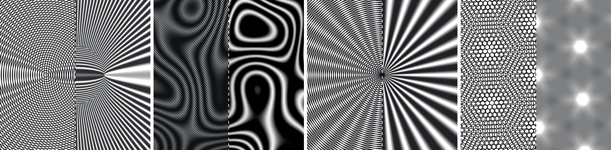
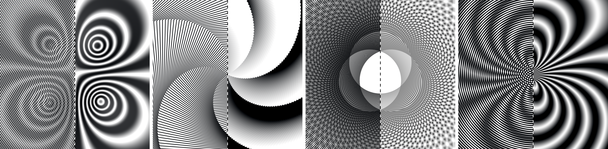
Superpose two dense families of curves and a third pattern appears that belongs to neither. Graphics treats moiré as an aliasing artifact to filter away, or as a printed pair of gratings solved offline and slid by hand; neither supports interactive authoring of the pattern itself. We represent a layer instead as two scalar fields: a counting map naming the nearest member of a curve family, fractionally, and a distance field to it, so that superposition composites fields rather than pixels and no raster exists at any stage. The counting map exists in exactly three ways, and the taxonomy organizes the subject: as a global formula, in which case the fringes of a superposition are the unit level sets of the difference of two counts, with a saturating tent profile that is exact under stated local hypotheses, without periodicity, and a per-pixel validity criterion; up to an integer winding, in which case fringes end, at authored defects whose signed endings count the winding exactly; or only as a search, when each member carries its own rigid motion and the family folds over itself. Which of the competing beats is visible is a best-approximation question: the beat hierarchy of two pitches is the continued fraction of their ratio, and per-pixel lattice reduction finds the winner at any order, where the order-two cap it replaces missed a fifth of visible fringes. For the folded case, the support function of the generating shape supplies a provably sufficient search interval, a Lipschitz skip rule, and an exact closed form for translated polygons: $10$–$35\times$ faster than the fixed enumeration it replaces across rotated settings, in exact agreement with brute force wherever the interval fits its budget. We present Moiré, a browser tool built on the model, and show that choosing two layers so that their count difference is an authored field turns the moiré into a live contour plot of that field, whose fringes localize to the true level sets within a mean of $0.80$ px on the hardest field tested.
moiré, interference, distance fields, support functions, procedural patterns, interactive authoring, GPU rendering
\orcid{0000-0000-0000-0000}
1 Introduction
Draw a comb of parallel lines on tracing paper, draw another, lay one over the other and turn it a few degrees. A third pattern appears: broad, slow bands that belong to neither sheet, made of ink already on the page and rearranged by nothing but the small difference between two nearly identical structures. Moiré has been a precision instrument since Rayleigh judged ruled gratings by the fringes they made against their own copies [74] and Righi read grating displacement from fringe motion [75]. It became an artistic medium in the 1960s [56, 58, 80], and artists have built patterns for it since, by hand [99] and by the plate [52]; it acquired a complete Fourier theory [8]; it grounded a security-printing discipline [19, 34]; and it reappeared at the nanoscale, where two graphene sheets twisted by $1.1^\circ$ form a moiré superlattice whose slow beat reorganizes the material into a superconductor [11, 17]. What it has not become is a medium an artist can draw in interactively. This paper argues that the obstacle is a representation, and proposes a different one.
Graphics has related to moiré in two nearly disjoint ways. The first is suppression: moiré is what undersampling looks like when the signal is repetitive; essentially the whole of texture filtering exists to prevent it [33, 103], and it remains a first-class concern in neural rendering [9]. The second is synthesis, a smaller literature that builds moiré on purpose: band moiré images [34], level-line moiré [19], target-driven phase modulation [93], variational layer design [45], artistic screening [60], micro-optics and curved fabrication [77, 97], and, running the amplification backwards, moiré as a sub-millimeter sensor [16, 70]. Across that second tradition one assumption is nearly universal: a layer is a rasterized image of a grating, possibly warped, multiplied against another. Authoring is therefore offline, since the layers must be solved for and then rasterized; playback is physical, printed transparencies slid by hand; and the pattern has a resolution, so displaying it at any other scale can destroy it or invent it (Figure 2). Interactive moiré toys and prepress suites exist, but in all of them the fringe is an unmodelled side effect of drawing two dense patterns; what the literature does not contain, as far as we can find, is an interactive tool in which the moiré itself is represented, predicted, and stable under zoom. The nearest system, FabObscura [83], authors barrier-grid occlusion rather than interference. We think the gap is not a missing feature but a missing representation.
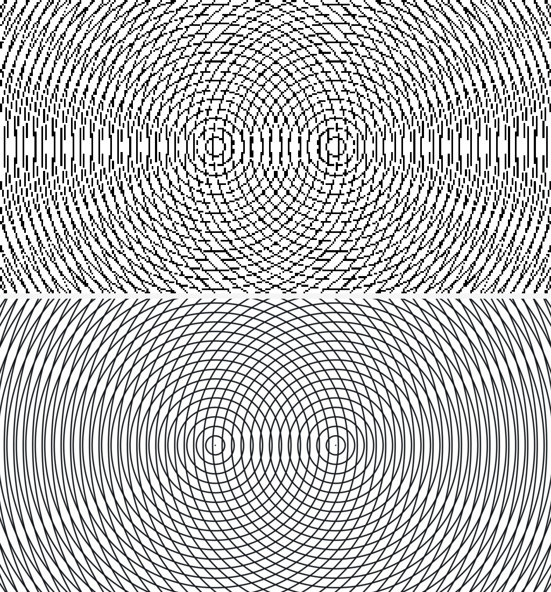
A layer, stripped of its raster, is a countable family of curves $\{\gamma_n\}$: the $n$th line, the $n$th ring, the $n$th turn of a spiral. We represent it by two scalar fields. The index field $\idx(p)$ says which member $p$ sits on, fractionally, so that $\gamma_n=\idx^{-1}(n)$; the distance field $d(p)=\min_n \mathrm{dist}(p,\gamma_n)$ says how far the nearest one is. Both are functions of a continuous position, evaluated per pixel, with no grid anywhere. The distance field is what a renderer thresholds into ink. The index field is a counting map, advancing by one at each member crossed, it is what the theory works with, and our central observation is that the interference lives entirely in it: the fringes of a superposition are the unit level sets of the difference of the two index fields. Section 4.1 makes this precise: the locally averaged ink is a function of $D=\idx_1-\idx_2$ alone, a saturating tent rather than a sinusoid, exact under stated local hypotheses and first-order accurate beyond them. The same section verifies the law against $107{,}691$ measurements over $12$ pairs of families, to a mean coverage error of $0.0034$. The locus and the profile shape have classical ancestors [3, 57, 63]; what the field form adds is a per-pixel statement about the actual compositing operator, with a computable validity criterion: the heterodyne ratio $\het$, a field that can be drawn, telling an author where in the frame a fringe will form before they commit to parameters. One subtlety runs through everything: a family's index convention is arbitrary, so $D$ is one representative of a lattice of integer combinations $k_1\idx_1+k_2\idx_2$, and the visible moiré is whichever combination beats slowest against the contrast its order costs (§4.2). Which combination that is turns out to be a best-approximation question with a classical answer: the visible-beat hierarchy of two pitches is the continued fraction of their ratio, and in two dimensions the winner is found exactly, at any order, by per-pixel lattice reduction (§4.3).
The deeper organizing fact, and the paper's spine, is that a counting map can exist in exactly three ways (§3.2). For most families it is a global formula; §3.5 lists the thirteen we ship, of which nine are one line of algebra each. It can instead exist only up to an integer gained around a loop: encode a circle-valued field, the polar angle being the prototype, and the count acquires a quantized winding, the fringes end, and the signed number of endings inside any loop is the enclosed winding times the gain, exactly. That object is the fork grating of singular optics, and Section 5 shows the fringe law failing at its core radius and drawing a circle around its own failure. Or the count can exist only as a search. What op artists actually reach for are families whose members are not concentric: each ring displaced a little further than the last, or turned a little further, so the family shears, spirals, and finally unwinds into a pencil of near-parallel curves; Riley's Blaze, a nest of zigzag rings each turned against the last, is exactly such a family [58]. We call these walking families (Section 6): member $n$ is the shape of radius $ns+\varphi$, displaced by $n\delta$ and turned by $n\theta$. Two extra parameters, and the closed form is gone: each member lives in its own frame, no formula in $p$ has these curves as its level sets, and the nearest index must be searched for. The obvious search — guess the index from the radius, check a fixed number of neighbors — fails coherently: the pixels whose true nearest member falls outside the guessed neighborhood form arcs, not speckle, so whole sides of whole rings disappear, and the budget is paid at every pixel whether or not it was needed. For a long time we believed these broken segments were a rasterization bug; they are an inversion bug.
Section 7 replaces the guess with a certificate. Every radial metric in this setting (circle, square, triangle, regular $N$-gon) is a support function, and support functions supply exactly the constants the problem needs: a Lipschitz modulus that lets indices be skipped unevaluated, in the spirit of sphere tracing [31]; an exact anisotropy floor; and a subadditive drift rate $\rad(-\delta)$ that is strictly tighter than $\lVert\delta\rVert$, where using the loose constant declares whole bands of ordinary settings unsolvable. Together they give a closed interval of integers that provably contains every member passing within a stroke width of the pixel (an interval that, unexpectedly, does not involve the rotation $\theta$ at all) and, when $\theta=0$, a closed form for translated polygons of any side count, including a marginal case in which the residual is eventually constant and no enumeration of any finite length can succeed. Measured on the GPU the certified solver is $10$–$35\times$ faster than the fixed enumeration it replaces across rotated settings, at equal or better fidelity, and faster than an exhaustive scan given the same termination bound. Where the interval genuinely explodes, on the tangent-pencil locus where unboundedly many members really do crowd a point, Section 9.6 shows the choice that matters is not how much to subsample but how: anchored to the family, the error reads as a thinner pattern; anchored to the pixel, as a shattered one, at identical cost.
1.1 Contributions
A field formulation of moiré in which a layer is a counting map plus a distance field, superposition is field compositing, and the pattern has no raster at any stage; with a three-rung taxonomy, exact, winding, fold, that organizes the catalog and the paper (Section 3).
The fringe law: locally averaged ink is a saturating tent in the index difference, so fringes are its unit level sets. The law is exact under stated local hypotheses, per-pixel, with no periodicity assumption, and with a computable validity criterion, the heterodyne ratio, drawable as a map (Sections 4.1–4.2).
The selection principle: which beat is visible is best approximation, answered by continued fractions in one dimension and by per-pixel Lagrange–Gauss reduction of the gradient lattice in two, under an amplitude weight that makes “slowest visible beat” well posed. The reduction replaces an order cap that missed $21\%$ of visible fringes in random carrier pairs, and its winner drives the criterion, the envelope's sweep schedule, and the contour overlay (§4.3).
Walking families, and their inversion: a provably sufficient index interval from the support function of the generating shape, a Lipschitz skip rule, and an exact closed form for translated polygons of any side count including the marginal drift (Section 7, Appendix A).
Moiré, an interactive tool: thirteen families, twelve concurrent layers compiled once, zoom-stable strokes, GPU type morphing, and no rasterization step (Section 8). Its envelope view draws the averaged ink directly, which requires averaging over index rather than over space; done properly it costs one solve and a few instructions per tap rather than one solve per tap (Section 4.4).
The winding rung made constructive: a circle-valued field mints topological defects, fringes that end, with the signed count of endings equal to the enclosed winding times the gain, exactly, and with the fringe law's own criterion drawing the core where it fails (Section 5).
Moiré fields as a contouring primitive: because fringes are level sets of an index difference, encoding a scalar field in that difference renders its contours without ever computing a contour. The fringes localize to a mean of $0.80$ px of the true level sets on the hardest field we tested, and the only sampling limit is an inequality between contour spacing and carrier pitch (Section 10).
An expression language for those fields, with the gradient the eikonal divide needs obtained by forward-mode differentiation rather than by hand, and compiled to straight-line shader code rather than interpreted per pixel. The compilation is what makes an arbitrary user-written field affordable: $37$–$281\times$ cheaper than the interpreter it replaced (Section 10.2).
2 Related work
Spectral theory. The standard account of moiré is spectral. Superposing two transparencies multiplies their intensities, so their spectra convolve, and the convolution produces sum and difference components that were in neither layer. When two carriers are close, the $(1,-1)$ difference component falls below the eye's cutoff and appears as a large, slow pattern. Amidror's monograph is the complete treatment [8], developed with Hersch across a sequence of papers that moves from analysis of screen interactions [2], to phase shifts [4], to synthesis under geometric transformation [5], and finally to aperiodic layers [6, 7], whose random-dot extreme is the Glass pattern [28]. The account is still growing: Feng extends it to objective structures (ring, helical and lattice patterns whose members are related by progressive symmetry transformations) through an augmented Fourier approach [24]. Those structures are the closest formal relatives of our walking families (§6), reached from the frequency side; we reach them per pixel, with a certificate, because a renderer has to. The spectral theory also supplies profiles, not only loci: the T-convolution theorem gives the moiré's intensity profile as a normalized cross-correlation of the layer profiles, in the image domain [3], trapezoidal for binary gratings [63], and extended to curved layers as the profile composed with the index difference [5]. Our debt to this theory is correspondingly large; §4.1 states what the field form adds: exactness with stated local hypotheses, per-pixel stroke widths, index fields with no closed form, and a drawable validity criterion.
The indicial equation. Running alongside the spectral account is an older and more elementary one. Label the members of each layer, ask where a member of one crosses a member of the other in a fixed relation, and solve: Oster, Wasserman and Zwerling derive the fringe curves of the standard configurations this way [57], Amidror gives it as the geometric approach, complementary to the spectral one, with curved gratings read as indexed line families (Vol. I, §11.2 of [8]); the metrology literature develops it [14], at book length in Patorski and Kujawinska [64]. This is the direct ancestor of our Section 4.1, and our index field is its label made continuous and evaluated per pixel. We claim no credit for the locus. The indicial construction itself does not supply the coverage between the fringes (metrology reads intensity as fractional fringe order, following Sciammarella [79], and the spectral theory supplies profiles as above), nor a statement of when the construction is meaningful. Theorem 2 supplies the first as a closed-form profile of the actual compositing operator and §4.2 the second as a field that can be drawn.
Constructive synthesis. Band moiré [34] is the landmark generation method in graphics: a base layer of image bands, replicated and compressed along one axis, sampled by a revealing line grating, with a derived linear map from band space to moiré space that predicts the revealed image's orientation, scale and velocity. Applying nonlinear coordinate transforms to both layers yields curved layers whose superposition is still a clean periodic moiré. Level-line moiré [19] changes the encoding: a bilevel target becomes an elevation profile, embedded as small local displacements of the base grating, and the superposition reveals the profile's level lines, which traverse the shape as the layers slide. Walger and Hersch multiplex up to seven such images in one base [96]. Target-driven phase modulation [93] is the strongest inverse formulation: given a grayscale target, solve for two curvilinear gratings whose dominant difference component reproduces it, with a smoothness term distributing information between the layers and an appearance phase to disguise them. Lebanon and Bruckstein [45] give the variational counterpart.
These methods and ours are close in spirit and disjoint in mechanism. They solve an inverse problem to produce two layers; we make the forward problem cheap enough that a person can solve the inverse problem by hand, in real time, at any zoom. The level-line formulation is the closest relative, and the relationship is clean: their construction embeds a designed elevation profile in a grating's phase so that its contours appear as fringes, and our Section 10 shows that in the field model this is not a construction at all but an immediate consequence of the fringe law, available for any field, on screen, with no printing step. We regard that as evidence the representation is the right one, not as a claim to have invented level-line moiré.
Halftoning. Halftoning is where moiré is classically a hazard and occasionally a tool. Rotated dispersed dither disperses the spectral impulses of a Bayer array so that color separations do not beat [59, 94]; multi-color dithering extends the control to non-standard inks [61]. Artistic screening [60] turns the halftone dot into an artist-supplied contour that grows with intensity and can be pushed through a conformal map, which makes the screen itself the designed object: the direct conceptual ancestor of band moiré, and a useful reminder that the expressive material here is the carrier, not the picture.
Physical realization and sensing. Moiré magnifiers pair a micro-image array with a slightly mismatched lens array [36]. EPFL's later work replaces printed revealers with cylindrical microlenses [97, 98] and Saberpour et al. carry designed moiré onto curved fabricated surfaces [77]. Refractive steganography [62] and metallic-substrate hiding [66] pursue the same hidden-image goal by other optics. Running the amplification backwards turns a moiré into a precise passive encoder: MoiréBoard for camera pose [100], MoiréTag for angle [70], MoiréWidgets for tangible controls [16]. These works establish that the phase of a moiré is a quantity worth measuring to high precision, which is indirectly an argument for having it available in closed form.
Interactive authoring. FabObscura [83] is the nearest system-shaped relative:
it parameterizes barrier-grid occlusion patterns as functions, and couples a
pattern editor to a live canvas and a fabrication export. Barrier-grid animation
is a parallax technique rather than interference, so the mechanism differs, but its
design stance — find the right parameterization, then expose it directly rather
than making the user reason about pixels — is the one we tried to adopt. Outside
archival venues a stratum of interactive moiré toys, web generators, and
security-printing design suites has existed for decades; in all of them the
fringe is an unmodelled side effect of drawing two dense patterns, and nothing
represents it, predicts it, or stabilizes it under zoom. Procedural moiré is
likewise a staple of shader practice, going back to Glassner's tutorial
treatment [29] and Sen's product-delay
constructions [81, 82], in the wider tradition of
evaluating a pattern per point rather than storing it [22].
The prevailing shader-sandbox idiom evaluates two periodic functions and
combines them, typically as abs(p1 - p2), a value composite
rather than a distance composite; Section 8.2 measures what
that costs: with no stroke width to stabilize, the pattern is a different
pattern at every zoom level, and the displayed moiré is partly the
sampler's own. Archival graphics has also drawn stripe families as level sets
of a per-point phase field, on surfaces with prescribed spacing and
singularities [43] and as phase fields feeding a periodic
profile [92]; neither carries a distance field, a fringe
law, or a moiré.
Moiré in visualization. Direct use of interference to encode data is rare. MoireGraphs is the notable appearance of the word in the visualization literature, and it names a resemblance: a radial focus+context layout whose concentric rings of visual nodes look like a circular moiré [37]. The place where fringes genuinely carry data is experimental mechanics and optical metrology. Moiré interferometry reads in-plane displacement: fringes are contour maps of displacement, with fringe order $N_x=fU$ for reference grating frequency $f$, and strains follow by differencing fringe orders [68, 69]. Moiré topography reads surface height the same way (its fringes literally are elevation contours [48, 89]), and Takeda's Fourier-transform method turned fringe images back into phase maps numerically [90]. These are measurement techniques, and their governing relation is exactly our fringe law read in the other direction. Section 10 takes it as a design primitive instead: the encoded field is arbitrary, on screen, and live.
Distance fields and certified search. The machinery we borrow from is the distance-field tradition: Taubin's first-order distance for implicit curves [91], guaranteed intersection from a Lipschitz constant [38], sphere tracing, which uses such a bound to skip space it can prove is empty [31], and its sharpening by local Lipschitz bounds along a segment [26]; adaptively sampled distance fields as a shape representation [25]; and the now-standard practice of shading vector art from a distance rather than a coverage mask [30, 71, 72]. Domain repetition with per-copy transforms, and the neighbor-checking it forces, is documented practice [73]; §7 replaces its fixed neighbor budget with a certificate. Our index window (Section 7.3) is a sphere-tracing argument moved from space into index space, and our skip rule is segment tracing along the index axis: where a ray marcher steps by the distance it can prove is empty, we step by the number of rings we can prove cannot be nearest. The alternative discipline, enumerating every cell a ray meets [1], is what the fixed sweep we replace amounts to. The closest methodological neighbors are the certified-query and range-analysis renderers, from Snyder's interval-based constrained minimization on procedural geometry [86] to the implicit renderers that bound a function over a spatial cell and subdivide until the bound decides [39, 42, 84]. Section 11 argues that our domain being $\Z$ rather than $\R^2$ is what upgrades their tolerance into a certificate. Seen from optimization, the certified scan is a Piyavskii–Shubert search [65, 85] run over $\Z$ instead of an interval of $\R$: the same Lipschitz envelopes, with the stopping tolerance replaced by integer exhaustion. The support-function facts we need are standard convex geometry [76, 78], and the same object is what collision detection queries when it walks a Minkowski difference [23, 27], though there it prices one pair of bodies, where here the certificate ranges over an indexed family of them; our contribution is noticing which four of its properties this problem is asking for.
Explicit geometry. The nearest thing to an off-the-shelf answer is to emit the members as paths and hand them to a vector renderer. That tradition is mature: resolution-independent curves on programmable hardware [46], random-access rendering of general vector graphics [50], GPU-accelerated path rendering [41], analytic rasterization under a polynomial filter [47]. For a single family at a legible zoom it is the better tool, which we say plainly because our own first implementation was of exactly that kind. Two things end it, and §9.5 measures both. The count of members meeting the frame grows without bound as the view widens, while a field costs the same per pixel at every zoom. And the compositing is wrong in the regime that matters: a path renderer antialiases each path separately and combines the results with over, which is derived from the assumption that the two coverages are uncorrelated sub-pixel areas [67]. A moiré is that assumption failing: it is precisely the spatial modulation of how the two families' strokes fall relative to one another, so over replaces the varying overlap with a constant one and the fringe field it carries is flattened, while the mean ink is barely touched. Analytic coverage of a whole scene at once [18] does not have this defect, but it is not what per-path pipelines do. The distance composite of §3 is a union coverage, not a per-path one, which is why it does not arise here.
Prefiltering a pattern. Where a procedural pattern is too fine to sample, the correct answer is to integrate it rather than to point-sample harder, a line that runs from the frequency analysis of aliasing [21, 49] through procedural noise and its filtering, surveyed by Lagae et al. [44] and Bruneton and Neyret [12], to normal-distribution methods for glinty surfaces [101, 102]. Two things connect that work to ours. Our saturated regime (§9.6) is exactly a place where a correct analytic mean would replace a fallback we know to be approximate, and we do not have one for a walking family. And the glint problem has our structure (“which member of a dense indexed family lies within this footprint”), solved with a budget [102] where an index interval might certify.
3 A pattern is a counting map
This section fixes the object the rest of the paper studies. It is deliberately plain: a pattern is two scalar fields, one that counts and one that measures, and every family we ship is a pair of formulas for them, collected in Table 1. What is not plain is how the counting half can fail to be a formula, and the three ways it can (§3.2) are the skeleton of everything that follows.
3.1 A layer is two scalar fields
Definition 1 (Family). A family is a countable collection of curves $\{\gamma_n\}_{n\in\Z}$ in $\R^2$, together with an index convention that names them.
We never represent $\{\gamma_n\}$ as geometry. A layer is represented by two functions of a continuous position $p\in\R^2$:
The index field is fractional: $\idx(p)=7.3$ means $p$ lies three tenths of the way from member $7$ to member $8$. The distance field is Euclidean and unsigned. The reading of $\idx$ we will lean on sounds trivial and is not: it is a counting map. Walk any path and $\idx$ advances by one each time a member is crossed, so its gradient is the local crossing rate and its integer level sets are the members themselves. The distance field is what a renderer inks; the counting map is where the interference lives, and it is the half whose existence can be subtle.
Most families in practice are the level sets of a single scalar phase function. It is convenient to keep the phase in world units, so that member $n$ is the level set $\{\ph = ns + \varphi\}$ with $s$ the spacing and $\varphi$ an offset. Then
where $\mathrm{pd}(v,s)=\min_{k\in\Z}|v-ks|$ is the distance from $v$ to the lattice $s\Z$. The division is Taubin's first-order distance approximation for implicit curves [91], applied to a phase residual. Both fields are one line of shader code.
3.2 Three ways to count
Everything in this paper is organized by one question: in what sense does the counting map exist? Our catalog contains exactly three answers, and they stratify the mathematics and the engineering alike.
Exact. The count is the level-set label of a global scalar phase, as in (3). Nine of our thirteen families live here (Table 1), the index gradient is a formula, and everything downstream is closed-form.
Winding. The count exists locally but gains an integer around a loop. The radial pencil's index is a branch of $N\theta/\pi$: well defined modulo $2N$, and not repairable by any relabeling, because the obstruction is a winding number, a topological charge. Such a count has no global scalar lift, and §5 shows that the fringes it makes are the dislocations of singular optics: fringes that end, in quantized numbers.
Fold. The count exists only as the answer to a search. Give member $n$ its own rigid motion and no function of $p$ has the members as its level sets; the family can even fold over itself, so that several members pass one point. The index survives as the argmin of a per-member distance (§6), the fringe law of §4 applies to it unchanged, and the price of this rung is the certified inversion of §7.
Orthogonal to the ladder is rank: how many integers name a member. A line family needs one; a lattice needs two, so its beats range over integer combinations of two generators per layer. Rank changes bookkeeping, integrability changes what exists, and the arc of the paper is the ladder climbed in order: exact counts and their superposition (§§3–4), winding (§5), folds and their inversion (§§6–7).
3.3 The gradient is not optional
The division by $\lVert\nabla\ph\rVert$ in Eq. 3 converts a phase residual into a length. It is easy to omit, and we omitted it: our shader applied it for the parabola family and not for the wave, hyperbola or spiral. Where $\lVert\nabla\ph\rVert>1$ the reported distance is $\lVert\nabla\ph\rVert$ times too large, so the stroke is thinner by the same factor: sweeping each family over its own slider range (supplemental material, § S2) we measure factors up to $25.2$ for the wave and $14.8$ for the hyperbola, with more than half the frame off by over $10\%$ in both cases; visually the family pales out exactly where it steepens and crowds (Figure 3). The omission is also a correctness bug: the stroke floor $\mathrm{halfT}=\max(t/2,\,1.15\,\mathrm{px})$, which keeps a hairline from breaking into speckle when zoomed out (Section 8.2), is a statement about screen distance, and compared against an undivided residual it guarantees nothing wherever $\lVert\nabla\ph\rVert\neq1$: the steep families, the ones that most need the floor, were precisely the ones not getting it. We adopt Eq. 3 everywhere. One cost: a wave at high amplitude and frequency now saturates to solid ink, because at those settings its members genuinely are closer together than a stroke width. That is the correct answer, and the previous behavior was hiding it.
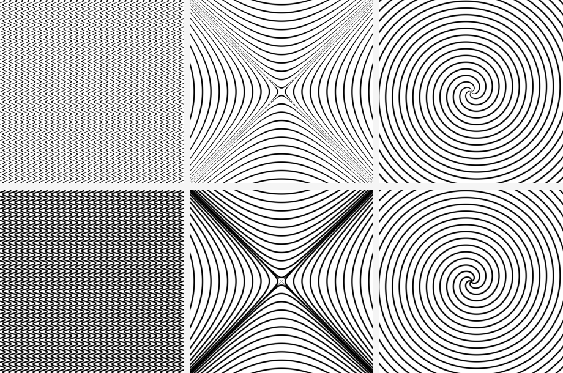
Eq. 3 is an eikonal approximation and it is exact only where the family is locally a foliation with steady gradient. The one family in our catalog that violates this is the hyperbola, whose gradient blows up on the asymptote pair (the degenerate $n=0$ level set, where the foliation folds); Section 3.5 excludes that member from the family for this reason.
3.4 Compositing
Layers composite as ink over paper. With stroke half-width $h_i$ and antialias band $a$, layer $i$ contributes coverage
and the frame is the running mix of background with each layer's color
at that alpha. For two black layers on white this is the union
$\alpha_1+\alpha_2-\alpha_1\alpha_2$. There is no separate composite pass, no
intermediate texture, and no place in the pipeline where a layer exists as pixels.
Three properties follow immediately and are the practical reason to do it this way.
No resolution. $\idx$ and $d$ are defined at every real position, so changing zoom changes only where they are sampled. A moiré authored at one scale is the same moiré at another (Section 8.2).
Bounded transitions by construction. The stroke floor $h\ge1.15\,\mathrm{px}$ means the ink field's transition band is never narrower than a pixel, so the energy above the display Nyquist rate is small (not zero: §8.2 measures the residue) without any filtering step. This approximates what the suppression literature achieves with prefiltering and the synthesis literature cannot achieve at all: the designed difference component is kept, and the undesigned beats against a resampling grid are never created because there is no resampling grid.
Editability. Every parameter enters $\idx$ and $d$ analytically. Moving a slider does not invalidate a cached raster, because there is none.
3.5 The catalog: nine closed forms
A family must supply the pair the sections above consume: a phase $\ph$ whose level sets are the members, and its gradient magnitude, which converts a phase residual into a distance. The catalog is deliberately short: thirteen families, of which nine are one line of algebra each, on the exact rung of §3.2; the four that are not sit on the other rungs and set up the rest of the paper. The supplemental material (§ S1) draws all thirteen, each alone and then beating against a perturbed copy of itself, which is the fastest way to see what the algebra buys.
For a family whose members are $\{\ph=ns+\varphi\}$, the index and distance fields are
so a family is completely specified by the pair $(\ph,\lvert\nabla\ph\rvert)$. Table 1 gives both for all nine, in ten rows: the hexagon row is the $N{=}6$ instance of the $N$-gon written out, beside the square and triangle (families of their own), because those three support forms need no transcendentals. Every entry is $O(1)$, branch-free apart from the free-side $N$-gon, and calls no transcendental function except where the geometry genuinely contains an angle.
| Family | $\ph(p)$ | $\lvert\nabla\ph(p)\rvert$ | Notes |
|---|---|---|---|
| Parallel lines | $\langle p,u\rangle$ | $1$ | $u=(\cos\alpha,\sin\alpha)$; pitch $s$ |
| Concentric circles | $\lVert p\rVert$ | $1$ | |
| Concentric squares | $\max(\lvert x\rvert,\lvert y\rvert)$ | $1$ | $L^\infty$; support function of the square |
| Concentric triangles | $\max\!\left(x,\ \tfrac{\sqrt3}{2}\lvert y\rvert-\tfrac{x}{2}\right)$ | $1$ | support function of the triangle |
| Concentric hexagons | $\max\!\left(\lvert x\rvert,\ \tfrac{\lvert x\rvert}{2}+\tfrac{\sqrt3}{2}\lvert y\rvert\right)$ | $1$ | support function of the hexagon |
| Concentric $N$-gon | $\lVert p\rVert\cos\!\big(\mathrm{wrap}(\theta_p,\tfrac{2\pi}{N})\big)$ | $1$ | $\theta_p=\mathrm{atan2}(y,x)$ |
| Wave | $x-A\sin(\omega y+\ph_0)$ | $\sqrt{1+A^2\omega^2\cos^2(\omega y+\ph_0)}$ | $A$ amplitude, $f$ frequency, $\ph_0$ phase |
| Parabola | $y-a x^2$ | $\sqrt{1+4a^2x^2}$ | opens up; $a=0$ is horizontal parallels |
| Hyperbola | $\sqrt{\lvert x^2-y^2\rvert}$ | $\lVert p\rVert/\sqrt{\lvert x^2-y^2\rvert}$ | rectangular; $n\ge1$, so no member through $0$ |
| Spiral | $\lVert p\rVert-b\,\theta_p$ | $\sqrt{1+b^2/\lVert p\rVert^2}$ | Archimedean; $b=0$ is concentric circles |
Three remarks on the table; each marks a bug we shipped.
The gradient column is not decoration. For the first six rows it is $1$ and can be dropped. For the last four it is not, and dropping it thins every stroke by the same factor the family is steep by. We had shipped that bug in three of the four; §3.3 reports the measurement.
Some families exclude an index. The hyperbola's $n=0$ member would be the degenerate pair $x=\pm y$, and $\lvert\nabla\ph\rvert$ blows up there, so the family starts at $n=1$. The spiral's $\ph$ has a branch cut wherever $\mathrm{atan2}$ does; it closes only if the arm count $M$ is an integer, which is why $M$ is rounded rather than passed through. Both are the kind of detail that a raster pipeline hides in the resampling and a field pipeline exposes on the first frame.
Three of the rows are support functions. The square, triangle and hexagon entries are all $\rad(q)=\max_k\langle q,n_k\rangle$ over the outward facet normals, written out. So is the $N$-gon row, in its trigonometric form. This is not a coincidence and it is not only a way to avoid an $\mathrm{atan2}$: §6 shows that the same object supplies the constants that make the hard case tractable.
3.6 Four families off the exact rung
The radial pencil. $N$ undirected lines through the layer origin, equally spaced over $\pi$. There is no $\ph$ here whose level sets are the members: the index winds around the origin, so any candidate phase is circle-valued with a winding-number obstruction at the core (a phase singularity in the sense of Nye and Berry [54]) and admits no global scalar lift: the winding rung of §3.2, and the object §5 mints deliberately. What the family does have is a distance,
which is what the renderer needs, and an index, the angular sector $\lfloor \theta_p N/\pi\rfloor$, which is what the fringe law needs. (Here and in Table 1, $\mathrm{wrap}(v,w)$ maps $v$ into $[-w/2,w/2)$. The distance formula is exact except in the corner wedge where a line meets the opened disc, where it understates the distance to the trimmed member by a bounded factor.) The second term is the parameter the interface calls Start: it opens a disc of radius $\varphi$ around the origin, because $N$ lines crossing at a point is a black dot, and opening the center is the standard fix. Because the sector index is piecewise constant in $\theta_p$ rather than smooth, a pencil against a pencil does not produce fringes in the sense of the fringe law; it produces the rosettes that the classical literature treats separately [8].
Lattices. Square, hexagonal and triangular lattices index their members by two integers, not one: rank two on the exact rung. The nearest lattice point is found by rounding in the lattice basis (for the hexagonal and triangular cases, cube rounding on $(u,v,-u-v)$, the $A_2$ closest-point rule of Conway and Sloane [20], exact and branch-light), and the layer offers two distances from the result: to the nearest vertex, and to the nearest edge. The hexagonal edge distance is again a support form, $\min_k(\mathrm{apothem}-\langle q,n_k\rangle)$ over the six sides, so hexagon edges are hexagon sides and not three superposed line families; getting this wrong produces a plausible-looking pattern with the wrong symmetry. Both distances take an anisotropic scale $(s_x,s_y)$, applied by dividing by $\lVert(n_x/s_x,n_y/s_y)\rVert$ per facet so that stretching a lattice keeps its strokes metrically correct. The consequence for the theory of §4 is plain: its fringe law concerns the difference of two scalar index fields, a lattice's index is in $\Z^2$, so the law applies componentwise, once per generating family. This is the classical situation, where a $2$-D screen superposition has a fringe system per pair of generating frequency vectors and the visible moiré is whichever pair beats slowest [5, 8]. The field formulation does not remove that bookkeeping; it localizes it: each component is a scalar field we can evaluate, difference, and map.
Walking families. Take any of the concentric rows of Table 1 and give member $n$ its own rigid motion: displace it by $n\delta$, turn it by $n\theta$. The picture is still a family of nested shapes, the parameters are two sliders, and the result is the geometry of much op art; but $\ph$ is gone, each member lives in its own frame, and the count survives only as a search: the fold rung. §6 takes these up once the theory of superposition is in hand, and it is where the field view stops being a change of notation and starts costing something.
4 Superposition
4.1 The fringe law
The rest of the paper rests on one observation about where the visible pattern of a superposition comes from.
Fix a point $p$ and let $D=\idx_1-\idx_2$ be the difference of index fields. Write $w_i$ for layer $i$'s stroke half-width measured in index units, $w_i=h_i\lVert\nabla\idx_i\rVert$, and $b_i=a\lVert\nabla\idx_i\rVert$ for its band. Define the index-space stroke profile $A_i(u)=1-\mathrm{smoothstep}(w_i-b_i,\,w_i+b_i,\,\mathrm{pd}(u,1))$.
Theorem 2 (Fringe law). Let $u$ be the direction of the mean index gradient $g=\tfrac12(\nabla\idx_1+\nabla\idx_2)$, let $T=1/\lVert g\rVert$ be the carrier period, and let $S=p+[-T/2,T/2]\,u$. Suppose that on $S$ both families are local foliations, that both gradients $\nabla\idx_i$ are constant, and that $D$ is constant. Then the mean ink over $S$ is
which depends on $p$ only through $D(p)$. If $D$ is not constant on $S$, the same expression holds up to an error $O(\het)$ in the ratio (10) below; if the gradients are merely near-constant, the error grows with their variation across $S$. In the hard-edged limit $b_i\to0$, provided $w_1+w_2\le\tfrac12$,
a saturating tent in $D$: flat at $2\max(w_1,w_2)$ while one stroke lies inside the other ($\mathrm{pd}(D,1)\le|w_1-w_2|$), rising with unit slope, and saturating at $2w_1+2w_2$ once the strokes clear each other. For equal widths the floor is a single point and the profile is the familiar tent. (Past $w_1+w_2=\tfrac12$ the strokes also overlap across the far side of the period and a second overlap term appears; the integral form (7) carries it automatically.)
The proof is a change of variables and is given in Appendix A.1; the content is entirely in the statement. The hypotheses are not interchangeable, and it pays to be exact about them. “Both families are local foliations on $S$” is what lets us reparameterize the segment by index instead of by arclength. Constant gradients are what make the stroke widths $w_i$ constants and the reparameterization measure-preserving; drop that hypothesis and the conclusion fails even with $D$ exactly constant, which is why the verification below excludes samples whose gradient varies across a period. “$D$ is constant on $S$” is what makes the answer a function of $D(p)$ alone, and it is the strong one: exact constancy means the two carriers agree exactly in pitch and direction, so the interesting cases only satisfy it approximately. The appendix carries the general case through and shows the correction is first order in $\het$, which is the same small parameter §4.2 uses to decide whether a fringe exists at all. So the theorem is exact in the limit that a fringe becomes infinitely broad, and degrades in the parameter that measures how far from that limit we are, which is why the verification below both restricts to $\het\le1/4$ and reports the residual rather than claiming zero. Four further remarks.
The locus and the profile shape are classical; the statement is not. $\Phi$ is periodic with period $1$ and extremal at $D\in\Z$ and $D\in\Z+\tfrac12$. So the light fringes are exactly $\{D\in\Z\}$ (where the two families' members locally coincide and their strokes overlap, wasting ink) and the dark fringes are exactly $\{D\in\Z+\tfrac12\}$, where the members interleave and the ink is maximally spread. The moiré is the contour plot of $\idx_1-\idx_2$ at unit interval, and nothing else about either family survives the average.
Both halves of that sentence have classical ancestors, and we want to be exact about the debt. The locus: writing the two families as $\idx_1=m$, $\idx_2=n$ and asking where members cross in a fixed relation $m-n=k$ is the indicial equation of Oster, Wasserman and Zwerling [57], which Amidror presents as the geometric approach [8]; read backwards it is the fringe-order law of moiré interferometry [69]. The profile: for two black layers Eq. 4 composes as a union, so the transmittances multiply, and (7) can be rewritten as
the circular cross-correlation of the two transmittance profiles, which for periodic gratings is Amidror's T-convolution theorem [3, 8], and which for binary gratings yields exactly the trapezoid of (8), a shape known since Patorski et al. [63]; Harthong reached the same profile by local averaging [32], and Amidror and Hersch extended it to curved layers as the profile composed with the index difference [5]. Metrology, likewise, has read intensity between fringes as fractional fringe order since Sciammarella [79].
What Theorem 2 contributes is the statement itself. The classical results are Fourier identities about fixed global profiles composed with closed-form bending functions, with the visible moiré identified perceptually; the theorem is an exact local spatial mean of the actual compositing operator, with stated hypotheses and a first-order error bound in a computable parameter. Its stroke widths $w_i=h_i\lVert\nabla\idx_i\rVert$ vary across the frame, so the profile is a per-pixel family rather than one function. It applies to an index field that exists only as the output of a search (§6), where no bending function can be written down. And it comes with $\het$ (§4.2), a validity criterion tied to the theorem's own error term rather than to a visibility argument, which varies over the frame and can be drawn. Because $\Phi$ is a formula for averaged ink rather than a set of curves, it can also be drawn (§4.4) and inverted (§10); those are the parts we lean on.
The tent saturates, and the saturation is a design fact. Eq. 8 is piecewise linear with a flat top, reached as soon as $\mathrm{pd}(D,1)>w_1+w_2$: most of the fringe is at full contrast, and the transition occupies only a $(w_1{+}w_2)$-wide sliver of each period, which is why field-composited moiré looks crisper than a first-harmonic model predicts. It also explains a design behavior we had noticed but not understood: past a certain stroke thickness, thickening the strokes stops changing the fringe and only darkens the whole frame. The dependence on stroke widths is the classical opening-ratio dependence of the trapezoid, here live under a slider.
No periodicity is required, and no closed form either. $\idx_1$ and $\idx_2$ are arbitrary. The theorem's hypotheses are local
(affineness of $D$ over one carrier period, and the eikonal condition) and say
nothing about global structure. A spiral is admissible. Two hyperbola families are
admissible. So, more delicately, is a walking family
(§6), whose index field exists without having a formula.
Wherever consecutive members bracket the point (everywhere when the drift
stays below the spacing, and away from the family's envelope curves
otherwise), the nearest index $n^\star$ plus the fractional residual
$h_p(n^\star)/(h_p(n^\star)-h_p(n^\star{+}1))$ is a continuous scalar field whose
level sets are exactly the members. It is an index field computed by search
rather than written down, the theorem does not care about the difference, and
the walking-circle row of Table 2 measures the law
holding on it.
The difference is one character among many. Nothing fixes a family's index convention: relabel its members by any affine integer map and $\idx$ changes while every curve, stroke and pixel stays the same. $D=\idx_1-\idx_2$ is therefore one representative of a lattice of candidate beats (the integer combinations $k_1\idx_1+k_2\idx_2$, each a character of the pair), and the theorem holds for whichever character makes its own hypothesis true: the one that is slow against the carriers. $k=(1,1)$ is the classical sum moiré [57]: where the two index gradients anti-align it is the sum that beats slowly, and a difference-only reading misses fringes that stand in plain sight. (Our first envelope view held $\idx_1-\idx_2$ fixed while it averaged, and every sum-labeled fringe system in the frame vanished from it.) Higher orders are just as classical: two line families near a $2{:}1$ pitch ratio beat in $2\idx_1-\idx_2$, fainter but plainly visible [3, 8], and the same trap recurs one level up: a criterion that scans only $k=(1,\mp1)$ declares such a frame fringe-free while the fringe stands in the render. §4.2 folds the low-order characters into one criterion (Figure 4 draws two of them as height functions over one superposition), the envelope sweeps orthogonally to whichever one the criterion picks, and for lattice layers, whose index is a vector, the same characters range over integer combinations of generators (supplemental § S3).
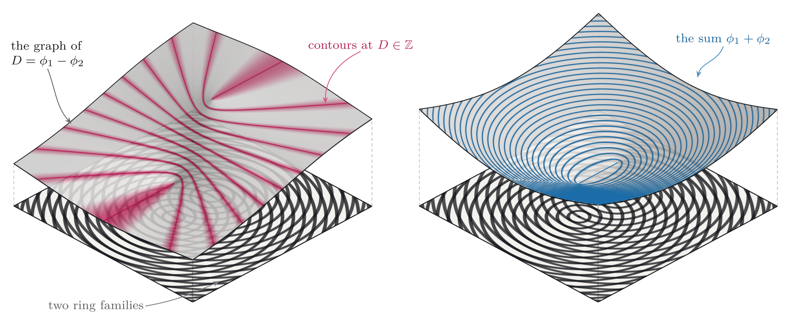
4.2 When is there a fringe at all?
Theorem 2 needs $D$ to be nearly constant over one carrier period, and a beat is worth calling a fringe only when it is broad against that period. Both requirements are the same ratio. Define the heterodyne ratio
$D$ changes by $\het$ across one carrier period, so $\het\ll1$ is exactly the condition that a fringe be large compared with the carrier; Figure 4 draws it as the flatness of $D$'s graph against the carriers' slope. Its numerator is the classical local moiré frequency, the vector difference of the two local carrier frequencies [8], made a per-pixel field, so it varies over the frame and can be drawn (Figure 5). (“Heterodyne” is borrowed from radio practice; in interferometry the word names a temporal frequency offset, which this is not.)
Equation (10) is the $k=(1,-1)$ instance of the character family of §4.1: for a general integer pair $k=(k_1,k_2)$,
whose denominator is the mean carrier gradient in the relabeling that brings the carriers close. The pair $(1,\mp1)$ recovers the difference and sum moirés [8, 57]; where the two gradients anti-align the difference ratio diverges while a bold sum fringe stands in plain sight, and the higher pairs catch the rational-pitch beats the same way [3]. Slowness alone, though, cannot rank the candidates: good rational approximations exist at every order, so the bare minimum of (11) over all $k$ favors beats no ink can carry. The beat at $k$ rides layer $1$'s $\lvert k_1\rvert$th harmonic against layer $2$'s $\lvert k_2\rvert$th, and a stroke profile's harmonics decay like $1/m$, so its contrast falls like $1/\lvert k_1k_2\rvert$. The operative criterion is therefore the weighted merit
minimized over the characters; $\mu_{(1,\mp1)}=\het_{(1,\mp1)}$, so the classical criterion is the order-one slice, and the weight doubles as the tie-breaker that keeps a near-tie from flickering toward the fainter beat. Which characters must be scanned is not a perceptual question, and §4.3 answers it exactly. Moiré draws the minimum live, as a view toggled beside the envelope, and hands the winning character to the envelope's sweep, so an author sees where a fringe will form, and which beat it is, before committing to the parameters.
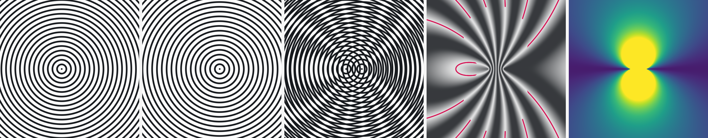
We take $\min_k\mu_k\le1/4$ as the operational definition of the fringe regime.
4.3 Which beat wins is best approximation
Fix a point and ask which character minimizes (12) as ever higher
orders are admitted. In one dimension the answer is a classical theorem. Two
parallel families of pitches $s_1$, $s_2$ have collinear index gradients of
magnitudes $1/s_1$, $1/s_2$, so the character $(p,-q)$ beats at spatial
frequency $\lvert p/s_1-q/s_2\rvert=(1/s_1)\,\lvert q\rho-p\rvert$ with
$\rho=s_1/s_2$ the pitch ratio: slowness is rational approximation
error. The characters that set a new slowness record as the order budget
grows are the best approximations of $\rho$ of the second kind, and by
Lagrange's theorem those are exactly the convergents of its continued
fraction [40]. The visible-beat hierarchy of a
two-pitch superposition is the continued fraction of its pitch ratio: the
$2{:}1$ beat is a convergent, the $3{:}1$ beat is the next one, and the
golden ratio, whose convergents converge slowest of all
rationals [35], is the fringe desert. We verified the
identification numerically over $207$ pitch ratios (the named
constants plus a deterministic random spread): every record-setting character
is a convergent, with no exceptions
(tools/ exp/ convergents.mjs). The envelope's own
quasi-random tap rule (supplemental § S3) is this theorem run backwards: its
scrambled generator advances by the golden ratio precisely so that no
integer character can survive the average.
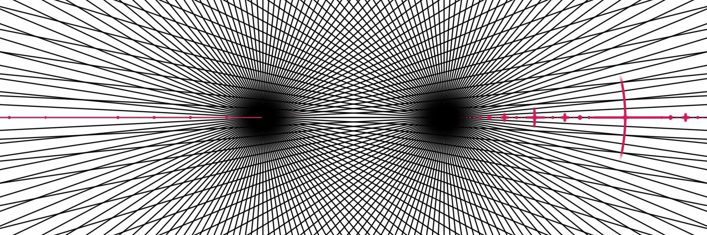
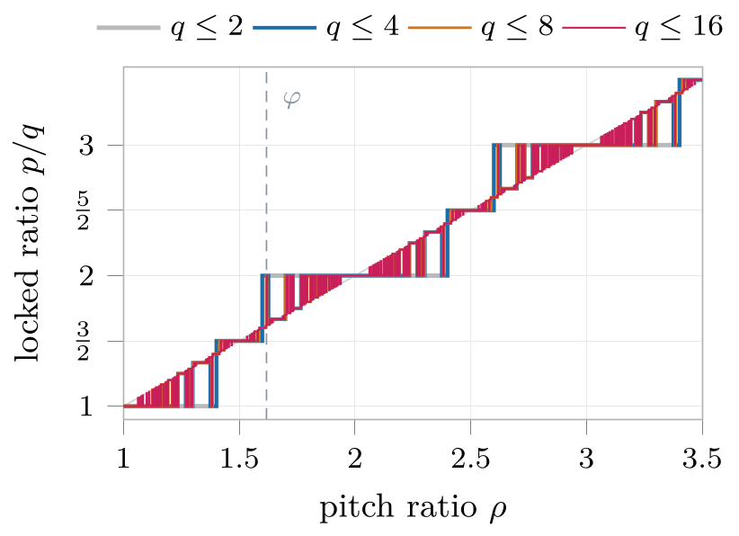
In two dimensions the gradients need not be collinear, and the object that replaces the continued fraction is a lattice: the candidate beat frequencies $\{k_1\nabla\idx_1+k_2\nabla\idx_2 : k\in\Z^2\}$ are the integer combinations of the two carrier gradients, and the slowest character at any order is the shortest nonzero vector of that lattice. In rank two the shortest vector is not hard: Lagrange–Gauss reduction, the lattice form of the continued fraction and of Euclid's algorithm, finds it exactly in a handful of iterations [51]. Moiré therefore runs the reduction per pixel: eight fixed iterations with the integer coordinates carried along (once a step fails to shrink, later steps rediscover the same failure, so the unroll needs no termination flag), then the weighted merit (12) minimized over the reduced short vector and a bounded window around it. The window matters because the weighted winner need not be a shortest vector: a longer lattice vector can carry smaller integer coordinates. The six characters with $\lvert k_i\rvert\le2$ remain as a floor, and the reduction is licensed by the gradients: it runs where both index gradients are closed-form (§3.5), while a walking family's gradient is a screen-space difference whose per-quad noise the reduction would read as slow high-order characters, so those pairs keep the order-two floor.
The cap it replaces was not a small concession. Over $4{,}000$ random
carrier pairs within a factor of four in pitch, a visible fringe exists
($\min_k\mu_k<1/4$ at order $\le48$) that the
$\lvert k_i\rvert\le2$ scan declares absent in $858$ cases,
$21\%$ of the visible fringes, clustering at pitch ratios near
$3$; the shipped bounded scan misses $1$ and names the exhaustive
winner in $99.8\%$ of trials
(tools/ exp/ convergents.mjs). Figure 7
shows what the difference looks like: at a $3{:}1$ pitch ratio the visible
moiré is the character $(3,-1)$, which no order-two set contains, so the
criterion read blank while the fringe stood in the render, and the envelope,
whose sweep schedule is chosen by this scan
(§4.4), washed it out. On pairs whose local ratio varies
across the frame, the stations of the convergent ladder become places
(Figure 6a).
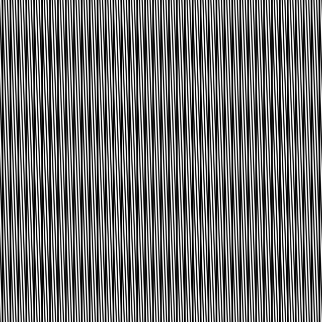
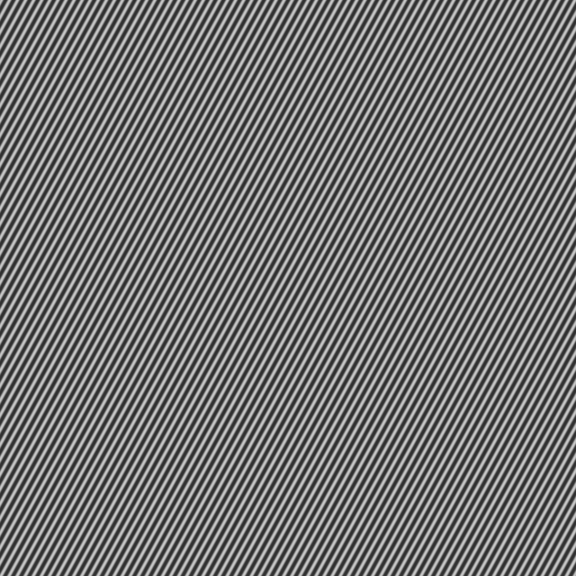
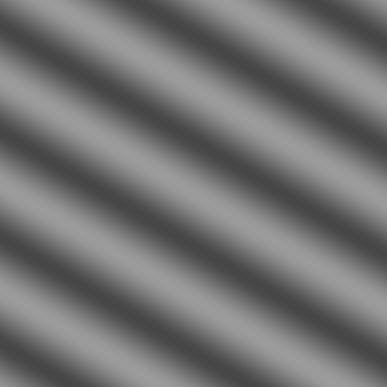
4.4 The envelope view
$\bar\alpha$ is a quantity, so it can be drawn, and drawing it gives the author the fringe system with the carrier removed. The obvious way to get such a picture is to blur the render, and it is the wrong way: a blur is a kernel in pixels, so it changes under zoom, it softens every real edge along with the carrier, and its width has to be retuned whenever the pitch changes.
Look again at the hypothesis of Theorem 2. Over the averaging segment every family's index advances by the same amount — that is what $D$ constant means — so the entire stack is a one-parameter object. Advance every layer's index together by $u$ and average over $u\in[0,1)$:
This is an average over index, not over space. No sample is taken off center, so nothing is blurred; the result is the theorem's own $\bar\alpha$ at the full resolution of the frame, and it is identical at every zoom. Since the integrand is periodic in $u$ with period exactly $1$, a uniform grid of $M$ nodes integrates every harmonic exactly except those at nonzero multiples of $M$, the aliasing algebra of $M$-bucket phase-shifting interferometry [13, 88], of which this view is a synthetic instance, and the integrand's harmonic content decays fast enough that $M=24$ leaves an error far below one color step. Every “averaged ink” panel in this paper is (13) at $M=24$, and it is a toggle in Moiré, not a post-process.
Written that way, (13) is an integral over the diagonal of the index torus $[0,1)^K$, one circle per family, and the choice of the diagonal is exactly Theorem 2's hypothesis rather than a convenience. The alternative deserves stating, because we implemented it first. Sweeping a rigid translation of the whole stack is a motion the layers could really make, where advancing an index is bookkeeping; it is also unusable: the taps then sample a two-dimensional disc for strokes that cover a few percent of it, so a handful of taps carry the answer and the rest carry noise. Sixty-four of them left the carrier standing and the fringes mottled. The diagonal is a fiction — no motion of the layers realizes it — and that is precisely why its average is the theorem's.
Which direction to sweep is the character choice of §4.2 over again, and one rule settles it: averaging along a direction $w=(w_1,\dots,w_K)$ of the torus annihilates every character $k$ with $k\cdot w\neq0$ and preserves those with $k\cdot w=0$, so the sweep must run orthogonal to the character it is meant to keep. The diagonal $w=(1,1)$ preserves $\idx_1-\idx_2$ and averages the sum moiré away; $w=(1,-1)$, the second family swept backwards, preserves the sum; and a second-order beat such as $2\idx_1-\idx_2$ needs $w=(1,2)$, without which the view erases a fringe that is bold in the render. Moiré picks $w$ per pixel from the same character scan the criterion runs, so the view keeps whichever beat the criterion certifies (§4.3); each direction still covers a whole period of every family, so nothing else about the average changes.
The rule scales to $K$ layers without amendment, and to any order: the winner
$(k_1,k_2)$ in general rides $w=(\lvert k_2\rvert,\mp k_1)$, so the $(3,-1)$
beat of a $3{:}1$ pitch ratio, which §4.3 finds by reduction,
is held by $w=(1,3)$ (Figure 7). The rule also says something
worth pausing on: the diagonal $w=(1,\dots,1)$ preserves exactly the
zero-sum sublattice $\{k:\sum_i k_i=0\}$, every pairwise difference
and every zero-sum ternary character at once. A beat between beats such as
$k=(1,1,-2)$, slow wherever $\nabla\idx_1+\nabla\idx_2\approx2\nabla\idx_3$,
rides the diagonal for free; three ring families arrange that conspiracy
over half the frame when $2/s_3=1/s_1+1/s_2$, the harmonic mean, and the
fringes that appear there belong to no pair (the second harmonic of the
third family carries them, so its duty cycle must stay off one half). What
costs a deviation is only a winning character that is not zero-sum,
and the deviation must be chosen against every layer it touches: deviating
the top pair's rates for a sum beat can scramble a slower difference beat
the second layer makes with the third, a fringe that stands in the
render and washes from the view, which is how our two-layer scan first
failed on three. Moiré therefore scans all pairs among the three topmost
families, plus the zero-sum ternaries, and spends a rate deviation only on
the global winner (supplemental § S3;
tools/exp/ternary.mjs reproduces the harmonic-mean prediction).
One solve, many taps. The cost, done naively, is $M$ full evaluations of every layer, and for a walking family one evaluation is the search of §7, so $24$ of them per pixel is a stall rather than a view: implemented that way, the envelope ran at five frames a second on the tool's own opening preset.
It need not, because advancing an index by less than one does not change which members are nearby. The solver is asked once per pixel for a phase sample
the signed distances to the nearest member and to the two flanking it, plus a floor $\ell$ for everything that does not slide (a saturated solve's guard, the hole at a pencil's center, the hyperbola's missing innermost neighbor; separating these from the residual is what keeps the average from inventing ink where there is nothing to slide onto). A tap at $u$ then reads
with $\mathrm{gap}=\lvert z^{\uparrow}-z\rvert$ the local member gap, so a tap covers one period of this family at this point whatever the pitch does across the frame, which is what the pencil needs, its gap growing with radius. For the nine phase families (15) reproduces the re-solved distance exactly, in nine instructions. For the pencil and the walking families it is first-order per tap yet exact for the integral's purpose, because the measured local gap is precisely one carrier period; the alternative, advancing the phase at the nominal rate, has no unit period on a walking family at all (radii grow while every pose stays put) and leaves visible residue in the view. Two implementation facts belong in the open. The solver runs these views with the guard widened to a full pitch, since Eq. 26's $\tfrac34 s$ would prove away the flanking members the sample needs. And the search still runs once per pixel while the sweep is arithmetic: median envelope frame times went from hundreds of milliseconds to within the 60 Hz budget.
Each family realizes the advancing index in its own parameter: a phase shift for the level-set families, a rotation for the radial pencil, a translation for a lattice. A lattice's index is a pair, so which combination of its two generators rides the sweep, and which way, is the character choice of §4.2 once more, and it must be made per point, or fringes plainly present in the render vanish from the view. Those details, and the contrast pivot the view expands about, are in the supplemental material (§ S3).
One caveat remains, and it is structural rather than a matter of implementation. The average is over the diagonal, so where Theorem 2's hypothesis fails, where $\het$ is large, the view still shows $\Phi(D)$ faithfully, but $\Phi(D)$ is no longer what the eye will average. The two are therefore meant to be read together: the envelope jointly with the ratio map beside it.
4.5 Verification
Theorem 2 is a claim about a rendered image, so we measured it. For 12 scene pairs spanning straight, curved, isotropic, anisotropic, periodic and aperiodic families (one of them a walking family, whose index field is the searched-for local one above) we compute the exact one-period directional mean of the union from the fields themselves, with no raster and hence no sampler error, and compare it against $\Phi$ evaluated at the window center. There is no fitting and no free parameter. Points are excluded on three stated grounds, each the empirical form of one of the theorem's hypotheses, so what is verified is the conditional claim: strokes merged ($w_i+b_i>0.45$, the tent's width condition), carrier bending more than $0.15$ rad across its own period (the foliation hypothesis), and gradient varying more than $15\%$ across a period (the constant-gradient hypothesis). The regime filter uses the $(1,-1)$ ratio alone, which is conservative: points where only another character of §4.2 is slow are excluded rather than tested, and extending the verification to the other characters is left open.
| Scene | Families | $n$ | mean | p99 | swing | light / dark | in regime |
|---|---|---|---|---|---|---|---|
parallel-rotate | two line families 6 degrees apart | 14,641 | 0.0000 | 0.0000 | 0.320 | 0.024 / 0.474 | 100% |
parallel-pitch | same direction, pitch mismatched by 4 percent | 14,641 | 0.0059 | 0.0189 | 0.326 | 0.026 / 0.470 | 100% |
circle-circle | circle families with displaced centers | 6,118 | 0.0000 | 0.0001 | 0.277 | 0.028 / 0.465 | 45% |
circle-parallel | circles under lines; D is not periodic in p | 3,952 | 0.0000 | 0.0000 | 0.242 | 0.034 / 0.475 | 27% |
hexagon-hexagon | anisotropic metric, hexagons 4 degrees apart | 13,382 | 0.0000 | 0.0000 | 0.260 | 0.024 / 0.475 | 95% |
square-circle | two different norms at the same spacing | 3,524 | 0.0000 | 0.0001 | 0.242 | 0.002 / 0.460 | 25% |
spiral-circle | aperiodic family: Archimedean spiral over circles | 14,041 | 0.0000 | 0.0001 | 0.243 | 0.031 / 0.461 | 100% |
parabola-parabola | curved families, bend mismatched by 8 percent | 484 | 0.0166 | 0.0329 | 0.169 | 0.160 / 0.218 | 100% |
wave-parallel | a wave family over lines | 14,641 | 0.0003 | 0.0011 | 0.118 | 0.011 / 0.170 | 100% |
hyperbola-hyperbola | rectangular hyperbolae, spacing mismatched by 4 percent | 11,036 | 0.0079 | 0.0214 | 0.640 | 0.123 / 0.430 | 100% |
walking-circle | a walking family (member $n$ displaced by $n\delta$) over concentric circles | 11,231 | 0.0159 | 0.0731 | 0.388 | 0.037 / 0.403 | 82% |
hyperbola-parallel | hyperbolae under lines: almost no fringe regime exists | — | — | — | — | — | $0$ |
Table 2 reports the result. Across $107{,}691$ admissible in-regime samples the mean absolute coverage error is $0.0034$ and the worst $99$th percentile over any scene is $0.073$, against a fringe swing of $0.12$–$0.64$ in coverage. Measured as index-gap from the nearest integer, the lightest deciles sit at a mean of $0.036$ and the darkest at $0.416$, against ideals of $0$ and $0.5$. The darkest-decile figure is diluted by the scenes whose profile plateaus: on a flat top every phase is equally dark, so the decile spreads across it and its mean distance falls below $0.5$ without any fringe being out of place.
The last row is the informative one. hyperbola-parallel has no
in-regime samples anywhere in the frame: $\het_k>1/4$ for every scanned
character, because a hyperbola family's index gradient sweeps through all
directions while a line family's does not. No low-order fringe forms in that
superposition, only a lattice of crossings, and the criterion says so before
rendering.
5 Counting with winding: defects
The middle rung of §3.2 is a count that exists only up to an
integer gained around a loop. The radial pencil lives there by construction;
what makes the rung a subject rather than a curiosity is that a layer can be
sent there deliberately, and the fringes it then makes are objects the
exact rung cannot draw. Give one layer of a pair an index term
$A\,\theta/\tau$, with $\theta$ a branch of the polar angle: $\theta/\tau$ is
a circle-valued field, defined modulo $1$ on the punctured plane,
gaining one unit per positive loop around the origin (the tool's field
language spells it theta / tau; §10.2 is the general
mechanism). At integer gain $A$ the index difference $D$ against an
unmodulated twin is multivalued, but its fringe set $\{D\in\Z\}$ is
perfectly well defined, and it is a pencil of $A$ rays. A fringe now does
something no single-valued field permits: it ends.
Along any loop $\gamma$ avoiding the singularities of the field, the signed
count of fringe crossings is the degree of the circle-valued map
$D\circ\gamma$, which is $A$ times the total winding enclosed; level sets
cannot terminate where $D$ is regular, so the signed number of fringe endings
inside $\gamma$ equals the enclosed charge times the gain: quantized,
localized, additive over defects, and blind to any single-valued field added
on top. We verified each clause by counting integer crossings on probe loops
(tools/ exp/ defects.mjs): $22$ probes spanning
gains $1$ to $10$, displaced defects, opposite-charge pairs, and a
defect plus an exact field, every count exact.
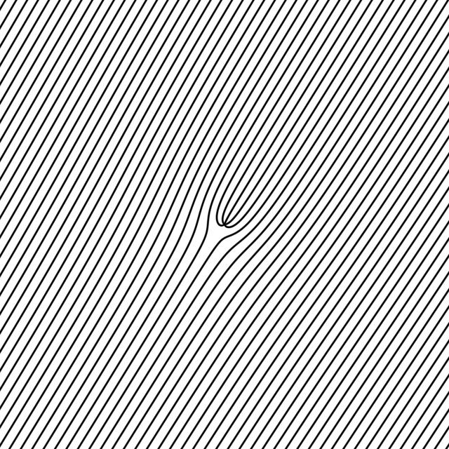
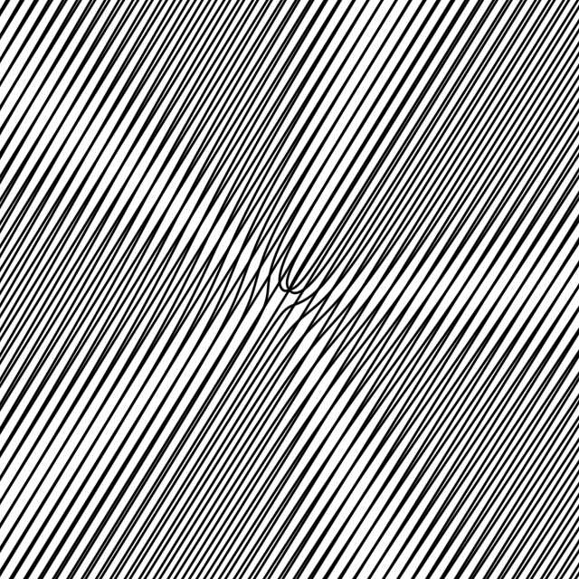
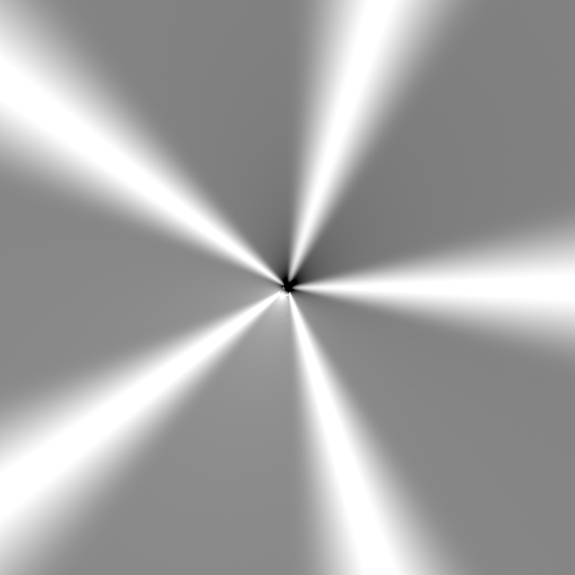
Figure 8 draws the smallest interesting case. A carrier plus $A\,\theta/\tau$ is the fork grating: $A$ extra members fan out of the origin, which is how holography prints screw-dislocated wavefronts [10], and the fringe that ends is the edge dislocation of Nye and Berry's wave-train taxonomy [55, 87]. In singular optics these objects are measured; here they are authored, typed into the field box at frame rate, and the radial pencil of §3.6 turns out to be the same object one level down: its index is $N\theta/\pi$, a pure winding field, so the pencil is the charge-$2N$ defect of the line family rather than an exception to the catalog.
The topology is exact but not free: near the defect the fringe spacing $1/\lVert\nabla D\rVert = \tau r/A$ collapses, so the heterodyne ratio against the twin is $\het = As/(\tau r)$, crossing the regime line $1/4$ at the core radius $r^\star = 2As/\pi$. We measured the crossing against the evaluator's exact gradients and it lands on $r^\star$ to within $10^{-4}$: inside the core the fringe law fails, the ratio view says so (§4.2), and the envelope's mask fades the region rather than inventing fringes in it: the theory draws a circle around its own failure. A non-integer gain has no well-defined fringe set at all; the tool renders the tear along the evaluator's branch cut, which carries the fractional winding, an honest picture of an impossible request.
6 Folds: walking families
The last rung of §3.2 is a count with no formula at all. This section constructs the families that live there and the field they induce; the next inverts them with a certificate. The tool that makes both tractable is the same object the catalog's concentric rows were quietly built from.
6.1 Radial metrics are support functions
Fix a convex body $K\subset\R^2$ that is symmetric under rotation by $2\pi/N$ and contains the origin. Write
where $U$ is the set of outward unit normals of $K$'s boundary. Then $\rad(q)=R$ is precisely the boundary of the copy of $K$ with inradius $R$, so $\rad$ is the natural “radius” for that shape. Equation (16) says $\rad$ is the support function of $\mathrm{conv}(U)$ [76], and the four cases our renderer exposes are all instances of it:
The polygon forms in (20) are the max over $N$ unit normals written out and folded by symmetry; for a free side count we evaluate $\lVert q\rVert\cos(\mathrm{wrap}(\arg q, 2\pi/N))$ instead, which is the same function. That the common cases avoid transcendentals entirely matters later: $\rad$ is the innermost call of the solver.
We will use four properties, all immediate from (16).
- (P1)
$1$-Lipschitz. $|\rad(a)-\rad(b)| \le \lVert a-b\rVert$, since $U$ lies in the unit circle. This holds across corners, where $\nabla\rad$ jumps.
- (P2)
Anisotropy floor. $\kappa\lVert q\rVert \le \rad(q) \le \lVert q\rVert$ with
\[\kappa \;=\; \min_{\lVert v\rVert=1}\rad(v) \;=\; \cos(\pi/N),\](21)the inradius of $\mathrm{conv}(U)$: $1$ for the circle, $1/\sqrt2$ for the square, $1/2$ for the triangle. Both constants in (21) are attained, so neither can be improved.
- (P3)
Homogeneity and subadditivity. $\rad(tq)=t\rad(q)$ for $t\ge0$ and $\rad(a+b)\le\rad(a)+\rad(b)$. Note that $\rad$ is not symmetric: $\rad(-q)\neq\rad(q)$ for the triangle. This asymmetry is exactly what makes the drift constant of Section 7.2 directional.
- (P4)
Piecewise linearity. For a polygon, $\rad$ is a max of $N$ linear forms, hence convex and piecewise linear with $N$ pieces.
6.2 The family, and the field it induces
A walking family is the sequence of curves
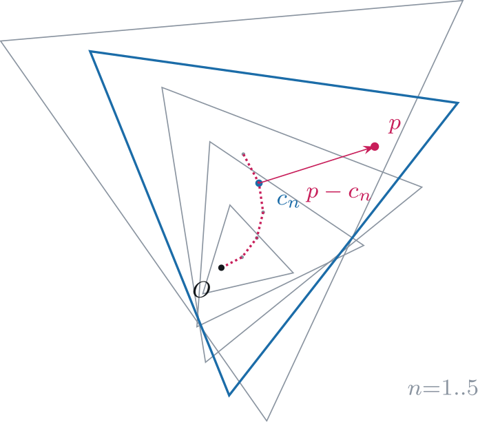
for $n\in\N_0$, with spacing $s>0$, phase $\varphi\ge0$ (so that every radius $ns+\varphi$ is nonnegative), per-index translation $\delta\in\R^2$, and per-index rotation $\theta$. Figure 9 shows one. The three degenerate cases are familiar: $\delta=0,\theta=0$ gives concentric shapes; $\theta=0$ alone gives a family whose centers walk a straight line; and degenerating the shape to a half-plane, whose support set $U$ is a single normal, recovers parallel lines at spacing $s$.
Expanding $\Rot{-n\theta}(p - \Rot{n\theta}(n\delta))$ gives the pulled-back point
which is the form we compute with: a rotation of $p$ that advances by $\theta$ per index, minus a translation that advances by $\delta$ per index. Define the index residual
positive when $p$ falls outside ring $n$ and negative when inside. The distance field the renderer wants is
This is not the Euclidean distance to $\Gamma_{n^\star}$; it is the residual of the inradius metric, which agrees with Euclidean distance for circles and underestimates it for polygons, by a factor of at most $1/\kappa$: (P1) gives residual $\le$ distance always, and the gauge comparison gives distance $\le$ residual$/\kappa$. Renderers of this kind consume $d$ through a smoothstep of width one pixel, so the distinction thickens apparent stroke weight near corners and changes nothing else. We keep the metric residual because it is what admits the bounds below; the Limitations of Section 11 note the cost.
6.3 The inversion problem
Equation (25) is a minimization over an infinite discrete set, so every practical solver is an argument about which finitely many $n$ can be skipped. Three regimes are classical and one is not.
When $\delta=0$ and $\theta=0$, $h_p(n) = \rad(p)-ns-\varphi$ is affine in $n$, so $d(p) = \mathrm{dist}\bigl((\rad(p)-\varphi) \bmod s\bigr)$ exactly: one evaluation. When the shape is a circle and $\theta=0$, $\lVert p - n\delta\rVert = ns+\varphi$ is a quadratic in $n$ whose roots bracket the answer; two integer evaluations suffice. When $\theta=0$ and the shape is a polygon, $h_p$ is convex and piecewise linear; we give the exact solution in Section 7.5. We have not found it stated elsewhere, and its marginal case is the part that matters in practice.
Everything else (any $\theta\neq0$) has no closed form, because $q_n$ in (23) contains $\Rot{-n\theta}p$, and asking for $h_p(n)=0$ asks where a sinusoid in $n$ meets a line in $n$. That is transcendental, with a solution count that depends on the parameters. The question is therefore not how to solve it, but how few integers we can prove it suffices to test.
The naive answer is $n \approx \rad(p)/s$, “the ring whose radius matches the pixel's radius,” plus a fixed number of neighbors. The next section shows how far that can be from the truth, and replaces it with a provably sufficient interval.
7 Bounded inversion
7.1 The guard
The solver does not need $d(p)$ everywhere. Coverage is computed as $1-\mathrm{smoothstep}(h-a,\,h+a,\,d)$ for stroke half-width $h$ and antialiasing width $a$ (Eq. 4), so any $d$ above $h+a$ produces identical output. We therefore fix a guard
and require only
Everything below is exact with respect to (27), which is exact with respect to the image: the clamp is the renderer's own quantization, and it changes no output pixel. (The envelope and ratio views of §4.4–§4.2 need the field measured a whole pitch out rather than a stroke width out, so under those views the solver runs with $G$ widened to $\max(h+a,\,s)$; every bound below holds verbatim at the wider value.)
Two smaller consequences of the same observation come free. The solver takes an accept threshold $h-a$: once a residual falls below it the pixel is fully inked and the loop can stop, whatever else is nearby. And it takes $G$ itself as a reject threshold, which is what makes the interval below finite.
7.2 The drift constant
Everything turns on how fast ring $n$'s boundary can outrun its own radius. Using (P3) on (23),
so the per-index rate is exactly
the support value of the metric in the direction opposite the walk. The obvious bound is $m \le \lVert\delta\rVert$, and $\lVert\delta\rVert$ is what a first implementation naturally uses. But (29) is smaller, sometimes much smaller: $m=\max(|\delta_x|,|\delta_y|)$ for a square, and as little as $\lVert\delta\rVert/2$ for a triangle whose flat side leads the walk (the vertex trailing); with the vertex leading, $m=\lVert\delta\rVert$ and nothing is gained.
The gap is not cosmetic. Section 7.3 shows the search interval is finite if and only if $m \neq s$, with width $\propto 1/|s-m|$. Substituting $\lVert\delta\rVert$ for $m$ therefore declares an entire band of settings unbounded that are in fact tightly bounded, and a solver that falls back to subsampling on that band produces the failure in Figure 14: not holes, but a wholesale thinning that removes two thirds of the ink and looks, to a user, like the pattern has changed. It is the largest single fidelity error we measured from any cause ($38.3\%$ of pixels), and it comes from a bound that is merely loose rather than wrong.
7.3 A provably sufficient interval of indices
Write $r=\lVert p\rVert$, $L=\lVert\delta\rVert$, $m=\rad(-\delta)$, and note $\rad(\Rot{-n\theta}p)\le r$ by (P2) and $\lVert q_n\rVert \ge |r - nL|$ by the triangle inequality on (23); both are independent of $\theta$.
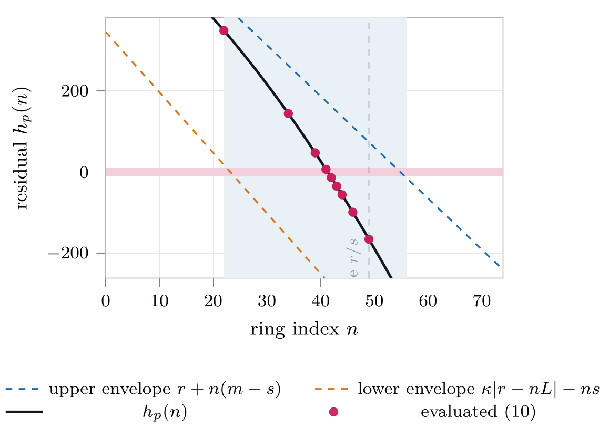
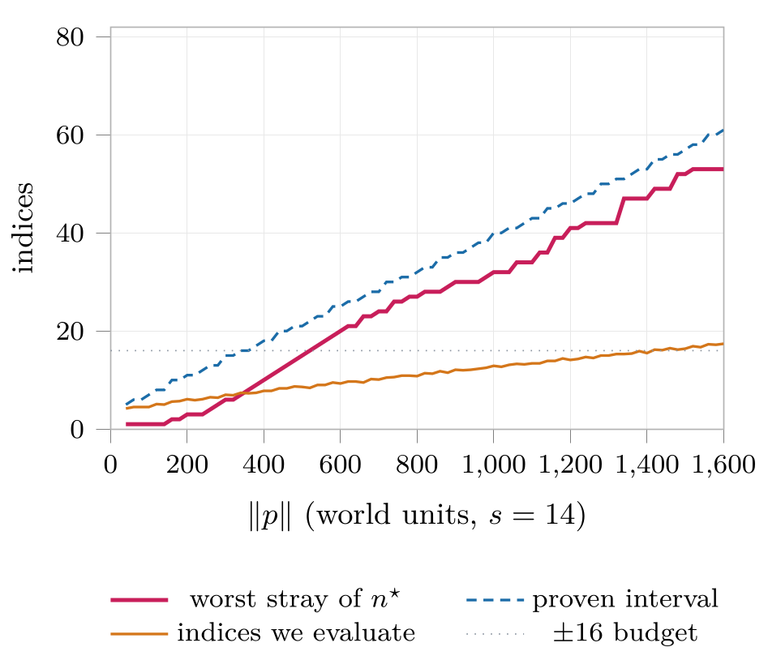
Lemma 3 (Two-sided envelope). For all $n \ge 0$ and all $\theta$,
Proof. The upper bound is (28) with $\rad(\Rot{-n\theta}p)\le r$. For the first lower bound, (P2) gives $\rad(q_n) \ge \kappa\lVert q_n\rVert \ge \kappa|r-nL|$. For the second, subadditivity applied as $\rad(-n\delta) \le \rad(q_n) + \rad(-\Rot{-n\theta}p)$ gives $\rad(q_n) \ge nm - r$. Subtract $ns+\varphi$ throughout. ∎
Both bounds are affine in $n$ (the first piecewise so), so intersecting them with the guard band $|h|\le G$ yields an interval by inspection.
Theorem 4 (Sufficient interval). Let
If $m \neq s$, then every $n$ with $|h_p(n)| \le G$ satisfies $n_{\mathrm{lo}} \le n \le n_{\mathrm{hi}}$, and consequently
Proof. For the lower end, note first that every $n < n_{\mathrm{lo}}$ lies on the branch $nL\le r$ automatically: $n(s+\kappa L) < \kappa r - \varphi - G \le \kappa r$ gives $\kappa nL < \kappa r$. On that branch (30) gives $h_p(n) \ge \kappa r - \kappa nL - ns - \varphi > G$, so $|h_p(n)| > G$ and no index below $n_{\mathrm{lo}}$ is admitted. For the upper end, if $s>m$ then $h_p(n) \le r + n(m-s) - \varphi$, and $h_p(n)\ge -G$ forces $n \le (r - \varphi + G)/(s-m)$; if $m>s$ then $h_p(n) \ge n(m-s) - r - \varphi$, and $h_p(n)\le G$ forces $n \le (r + \varphi + G)/(m-s)$. Both are bounded by (31). Every excluded index has $|h_p(n)|>G$, so it cannot lower the clamped minimum, giving (32). ∎
Three remarks. First, $\theta$ does not appear in (31). The rotation destroys the closed form but does not widen the search: it is bounded away by $\rad(\Rot{-n\theta}p)\le r$, which is tight since some index does place $p$ along a vertex direction. Second, the interval is tight in the sense that both envelope constants are attained, so it cannot be narrowed without using more than $\rad$'s convexity class. Third, the interval degenerates only on the single locus $m=s$: there, the two envelopes are parallel to the guard band and infinitely many rings genuinely pass within $G$ of a generic point. That is not a failure of the bound but a property of the family, and we return to it in Sections 7.5 and 9.6.
Figure 10 works one pixel through. The naive guess is $49$; the truth is $41$, $8$ rings away. The proven interval is $[22,56]$, and Figure 10 shows why no constant would have done: we measured how far the nearest index actually strays from the naive guess, worst case over directions, and it grows linearly in $r$: past $r\approx500$ it exceeds the widest neighborhood our previous solver could even express. The same plot confirms the theorem empirically: over $13{,}458$ sampled pixels whose nearest ring is inside the guard, the argmin fell inside (31) every time.
7.4 Skipping the interval
An interval is a proof, not yet an algorithm; near the origin it is a handful of indices, but at zoom-out it can be thousands. We shrink it with a Lipschitz argument in index space.
Lemma 5 (Index Lipschitz bound). For all $n, n'\ge 0$, $|h_p(n')-h_p(n)| \le \Lambda\,|n'-n|$ with
Proof. By (P1), $|\rad(q_{n'})-\rad(q_n)| \le \lVert q_{n'}-q_n\rVert$. From (23), $\lVert q_{n'}-q_n\rVert \le \lVert(\Rot{-n'\theta}-\Rot{-n\theta})p\rVert + |n'-n|L = 2r\bigl|\sin\tfrac{(n'-n)\theta}{2}\bigr| + |n'-n|L \le |n'-n|\,(|\theta| r + L)$. The ring radius contributes $s|n'-n|$. ∎
So from a sample with residual $|h_p(n)| = v$ and a current best $b$, no index within $(v-b)/\Lambda$ of $n$ can beat $b$, and the whole run can be skipped unevaluated. This is sphere tracing [31] with the ray replaced by the index axis. The loop is Algorithm 1.
Two implementation points matter enough to measure (Table 6).
Carried motion. $q_n$ advances by a fixed rotation and a fixed translation
per index, so the loop carries $\cos(n\theta-\arg p)$ and $\sin(n\theta-\arg p)$
through an angle-addition step instead of recomputing them. Combined with the
transcendental-free forms in (20), the inner iteration contains no
transcendental function at all: it is a handful of multiplies, a max, and an
absolute value. We re-anchor every $32$ carried steps, which keeps
f32 drift far below a pixel; at large $n$ the carried value is in fact steadier than
$\cos(n\theta-\alpha)$ evaluated cold, because the argument does not grow.
Lattice anchoring. When the interval exceeds the budget $B$ we stride by a power of two, and the start is snapped to a multiple of the stride rather than to $n_{\mathrm{lo}}$. Since $n_{\mathrm{lo}}$ depends on $p$ and the stride does not, this is the difference between neighboring pixels agreeing on which rings exist and each pixel sampling its own subset. Section 9.6 shows the consequence, which is severe and free to avoid.
7.5 Translated polygons in closed form
The scan of Algorithm 1 is exact and fast, but for $\theta=0$ the scan can be replaced by an exact $O(N)$ solution regardless of the interval width, including on the locus where the interval is infinite. Property (P4) is the reason, and we have not found it used for this.
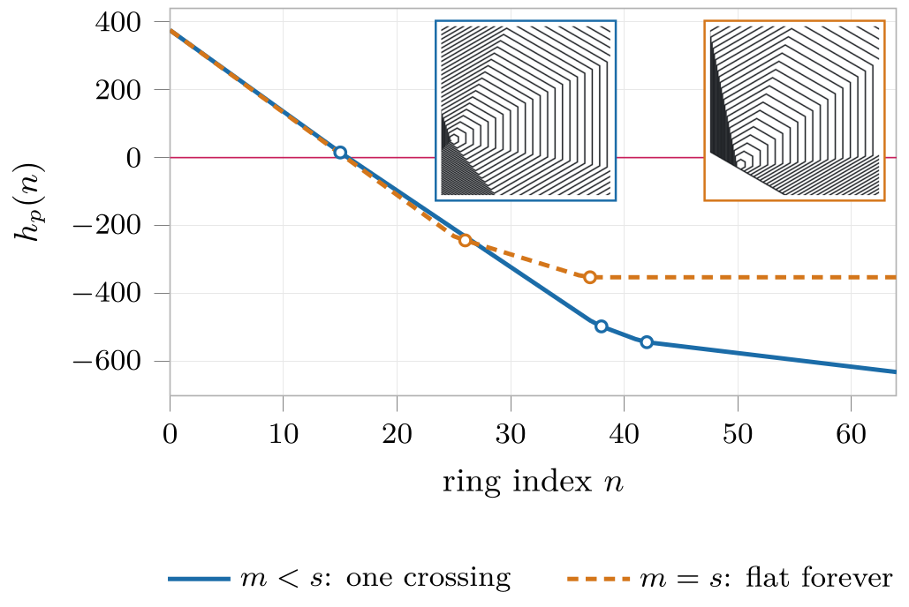
With $\theta=0$, (23) becomes affine in $n$: $q_n = p - n\delta$. Writing $a_k = \langle p, u_k\rangle$ and $b_k = \langle \delta, u_k\rangle$ over the $N$ unit normals,
a maximum of $N$ affine functions of $n$ minus an affine function: convex and piecewise linear, with at most $N$ breakpoints and slopes increasing in $n$. Its asymptotic slope is $m - s$ with $m=\rad(-\delta)=\max_k(-b_k)$: the same drift constant as (29), arrived at independently.
Proposition 6. Let $\theta=0$, let the shape be a polygon with $N$ facets, and let $p$ lie on or outside the innermost ring, $\rad(p)\ge\varphi$. (Inside it, $h_p$ is negative and strictly decreasing, so the answer is $\min(G,\,\varphi-\rad(p))$, attained at $n=0$.)
If $m < s$, $h_p$ is strictly decreasing and has exactly one zero, which lies on some facet's own linear segment. That zero is one of the $N$ solves $n_k = (a_k-\varphi)/(s+b_k)$, and $\tilde d(p) = \min(G,\min_k \min_{j\in\{\lfloor n_k\rfloor, \lfloor n_k\rfloor+1\}} |h_p(j)|)$, with each candidate clamped to $j\ge0$: an unclamped negative candidate indexes a ring that does not exist.
If $m = s$, the facet $k^\star$ attaining $m$ has $s + b_{k^\star} = 0$ (its solve is skipped), and $h_p \equiv a_{k^\star} - \varphi$ on the terminal segment, attained at every index past the crossover. $\tilde d(p)$ is the minimum of $|a_{k^\star}-\varphi|$ against the remaining facets' clamped candidates as in (1), then clamped at $G$.
In both cases the cost is $2N+2$ evaluations of (34), independent of $r$, $s$, and $\delta$.
Proof. By (34) $h_p$ is convex with slopes $-(s+b_k)$ ordered increasingly in $n$. If $m<s$ then $s + b_k > 0$ for every $k$, so every slope is negative and $h_p$ is strictly decreasing; being continuous with $h_p(0)=\rad(p)-\varphi\ge0$ by hypothesis and $h_p\to-\infty$, it has one zero, attained on whichever segment is active there, whose linear equation is $a_k - nb_k - ns - \varphi = 0$. Convexity makes $|h_p|$ unimodal, so its integer minimum is adjacent to the real zero. If $m=s$, the maximum in (34) is eventually attained by $k^\star$, and there $h_p(n) = a_{k^\star} + ns - ns - \varphi$ is constant; before the crossover $h_p$ is a strictly decreasing piecewise-linear function whose zero, if it has one, is covered by the remaining facets' candidates. ∎
The square case ($N=4$, normals on the axes) is presumably folklore; the content of Proposition 6 is that it generalizes to every side count and, more importantly, that case (2) exists. Figure 11 plots both. The marginal case is the one that repays the effort: it is exactly the locus where Theorem 4 gives up, and it is not exotic. It is the family whose rings pile up along a line, which is a pattern users deliberately make. Any scan, of any budget, walks off the end of that flat segment without reaching the indices that carry the answer. Handling it costs one comparison. Table 6 measures the difference at $101.2\times$.
We dispatch to the cheapest sufficient method: constant-time mod when
$\delta=0$ and ($\theta=0$ or the shape is a circle, since rotating a radial
metric is a no-op); the quadratic for translated circles; Proposition 6
for translated polygons with integral side count and $m \le s$;
Algorithm 1 otherwise. A morph that passes through fractional side
counts is not any polygon's support function, so it correctly falls through to the
scan rather than solving for facets that do not exist.
7.6 Implementation
The solver exists twice: once in TypeScript for tests and once in WGSL for the renderer, generated as separate functions and composed as shader includes [95]. The twins are checked against each other numerically on the GPU (Section 9.1) and the TypeScript side is checked against brute force in a unit test that sweeps shapes, spacings, offsets, and radii, including the marginal drift. Ring evaluation is branch-light: the interval, the stride, and $\Lambda$ are computed once per pixel, and the loop body has a single data-dependent branch (the accept exit).
We set $B=1024$ evaluations and additionally cap the interval span at $2^{16}$ so
that the loop terminates on the $m=s$ locus when the closed form does not apply
($\theta\neq0$). Neither constant affects correctness where
Theorem 4 applies; both are reported and ablated in
Section 9. Three numerical points. The shipped upper bound uses
the two per-branch forms derived inside the proof of
Theorem 4, $(r-\varphi+G)/(s-m)$ and $(r+\varphi+G)/(m-s)$,
which are slightly tighter than the single display (31). The
closed-form dispatch admits $m \le s + 10^{-4}$, and within $10^{-4}$ of the
marginal drift the leading facet takes the flat-constant branch of
Proposition 6 rather than a crossing solve: the crossing there
sits at an index of order $1/|s-m|$, where f32 evaluation is
catastrophic, so the whole near-marginal band reads as flat, the same answer
the capped scan reaches, on both twins. And the side count is capped at $24$
facets; beyond it (unreachable from the interface) the dispatch falls through
to the scan, which remains exact.
8 Moiré
Moiré is a browser tool. It is also the reason the previous three sections exist: every bound in them was forced by something an author could reach with a slider that we could not yet draw fast enough, or correctly enough. This section describes the program, and concentrates on the five decisions that the field formulation makes available and that we would not have found otherwise.
8.1 One pass, twelve slots, compiled once
The whole picture is a single full-screen fragment program. There is no geometry beyond one quad, no texture, no render target, and no rasterization of any layer into any buffer. The program is written in Three.js's shading language [15] and runs through WebGPU [95]; TSL matters here only because it lets the same expression tree be assembled in TypeScript, which is how the CPU twin of §7 stays a twin.
A layer is $19$ uniforms. Nine describe the family (type, previous type, morph
parameter, spacing, phase, side count, per-member offset, per-member rotation,
line count) and the rest describe its appearance and placement. Crucially there
are always twelve of these slots, allocated and compiled at startup, each
gated by an active uniform. Adding a layer writes uniforms. Deleting or
hiding one writes $\texttt{active}=0$. Neither touches the node graph.
This is a small decision with a large consequence, and we got it wrong first. The natural way to write the renderer is to build the shader from the current layer list, which means every add, delete and hide rebuilds it. In WebGPU a rebuild is a pipeline creation, and pipeline creation is tens to hundreds of milliseconds during which the canvas cannot present. The result is a tool that stutters exactly when an author is composing, the moment when they are most likely to be exploring rather than committing. Fixing the layer count and paying for twelve unconditionally costs a few branches per pixel and makes layer count free. Frames are then driven by a dirty flag on the store, coalesced to one render per animation frame.
The one exception, and how it is paid for. Exactly one edit changes the program: a layer's field expression, which is compiled into the shader rather than interpreted by it (§10.2). Three things hide the rebuild: it is per slot, so eleven layers are undisturbed; it is debounced by $220$ ms, longer than the gap between keystrokes; and the renderer holds the last presented frame across the build while the field editor's live preview runs on the CPU evaluator, so the author never waits on the GPU to see what they typed.
8.2 The stroke floor
A family is a set of curves of zero width; ink comes from thresholding the distance field. Given a stroke thickness $t$, write $\mathrm{pixel}=1/\mathrm{zoom}$ for the world size of a pixel and set
then $\alpha(d)=1-\mathrm{smoothstep}(h-a,\,h+a,\,d)$, with $a$ the antialias band of Eq. 4.
The floor $1.15\,\mathrm{pixel}$ is what keeps a zoomed-out pattern from disintegrating. Without it, a hairline family at low zoom has strokes narrower than the sample spacing, and the picture breaks into speckle that is visually indistinguishable from the inversion failure of §7; the two are easily attributed to each other. With it, the stroke can never be thinner than about a pixel, and the fringes survive (Figure 12).
To quantify what the floor does, take a spiral over a displaced circle family, fix a world window, and render it over $1.2$ decades of zoom twice: once at one sample per pixel, as the shader does, and once at $36$ samples per pixel as a prefiltered reference. Each rule is compared against the properly sampled version of its own intent, so that sampling error is isolated from any difference in what was being drawn. At the coarsest zoom, where one carrier period is $1.5$ px, the standard deviation of the per-pixel ink error is:
| worst noise | at coarsest zoom | |
|---|---|---|
| with the floor | $0.046$ | $0.0015$ |
| floor removed | $0.115$ | $0.115$ |
| phase residual, no floor | $0.118$ | — |
The gap is a factor of $77$. So the floor does suppress the speckle, and by a lot. But the same experiment prices it: even sampled perfectly, the clamped stroke lays down up to $0.61$ more ink per pixel than the hairline it stands in for, because a stroke held at a pixel wide inside a period that is narrower than that must overlap itself.
The floor, in other words, is not an antialiasing method. It converts an unbiased and very noisy estimate of the pattern into a biased and nearly noiseless one, and it is the right trade only because a moiré is read as structure rather than as tone: a frame that is uniformly too dark preserves the pattern, and a peppered one destroys it. The unbiased low-noise answer is the analytic mean of the family over the pixel, which for a walking family we do not have; that is the open problem of §11. The floor predates this characterization; the measurement is what identified which of the two errors it chooses.
Two things about (35) are only correct because of the field view. First, $h$ is a world distance, so it must be compared against a world distance, which is why the gradient divide of Table 1 is not optional: applied to a phase residual, the floor guarantees nothing, because a phase unit is not a length. Second, having a hard $h$ means we know in advance which distances cannot matter. Anything beyond $h+a$ is fully transparent. The solver of §7 is therefore not asked for $\min_n d_n$; it is asked whether any $d_n$ falls below $h+a$, and is free to prove the rest away without evaluating them. The guard and the skip rule are the same idea seen from two ends.
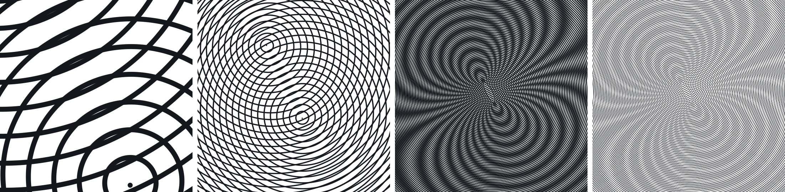
8.3 Continuous transitions between families
Switching a layer from circles to hexagons is a change of $\ph$, and the direct implementation of that is a jump. Authors read a jump as breakage, and more importantly they cannot see what changed, which is precisely the thing a tool for studying interference should show.
So the slot carries two family codes and a mix parameter: the shader evaluates the distance under both the old family and the new one and interpolates the distances, easing the mix over $280$ ms with a cubic. Interpolating distances rather than images means there is one stroke at all times, travelling from one geometry to the other, instead of two strokes cross-fading. The store snaps to the target immediately, so the eased value lives only in the uniform and no undo, export or reload can catch a half-morphed state. Switching to a family for which the per-member motion is meaningless (lines, lattices, curves) also zeroes the two walking parameters, because leaving them set produces a layer whose sliders visibly do nothing.
8.4 Direct manipulation of a field
Dragging moves the selected layer in screen space, which requires inverting the
layer's own rotation onto the drag delta or the layer walks away from the cursor;
holding alt rotates the layer about the world origin, the operation that
makes a walking family unwind. The wheel zooms to the cursor, and the first paint
waits on compileAsync, easing two default concentric layers into the
loaded preset with the same morph machinery, so the first thing an author sees is
the mechanism moving into place. Everything else is deliberately thin: one collapsible panel, the envelope and
ratio views of §4.4–§4.2 as header
toggles, a still and clip export, and a JSON scene file that saves the
construction and nothing else: layers, camera, background, and what moves
(§8.5). A looping parameter is written into that
file at the value its cycle departs from rather than wherever the clock had
carried it, since the instant a file happened to be saved at is a fact about the
session and not about the pattern. There are no layer effects and no inspector;
the pattern is the document.
8.5 A frame is a function of the clock
Nothing in the renderer accumulates. There is no history buffer, no progressive refinement, no temporal filter and no cached raster: a frame is determined by the twelve slots' uniforms and the handful of camera and view uniforms beside them, and by nothing else. The animation model is built to keep it that way. An animated parameter is a function $v(t)$ evaluated afresh every frame rather than a value advanced by $v \leftarrow v+\dot v\,\Delta t$, and several parameters may share one timing (a delay, a period, a mode and an easing) so that a dozen knobs move as one gesture instead of as a dozen that drift apart. Parameters that are functions of the clock, over a renderer that holds no state, make the frame itself a function of the clock.
Two things follow that a renderer carrying state does not get. Scrubbing is exact: the frame at $t$ is computed rather than replayed, so seeking backwards costs what seeking forwards costs and neither depends on where the clock has been. And capture need not run in real time. The recorder is the clock rather than an observer of it: it asks for frame $n$ at exactly $t_0+n/\mathrm{fps}$, renders once synchronously at a stated size, waits for the pixels however long they take, and only then advances. So a file at $2160$p and $120$ fps comes out of a renderer that never has to reach that rate, and the same range recorded twice is the same file twice. The clip's length is not guessed either: every animator states its own period, and the tool offers the least common multiple of them, which is the shortest range at which every cycle has closed and the clip therefore repeats without a join.
9 Results
9.1 Protocol
We compare four solvers. Sweep is the fixed-budget enumeration our renderer shipped before this work: seed at $\rad(p)/s$, sweep a constant number of neighbors, refine with Newton. Loose is the interval of Theorem 4 with the drift constant (29) replaced by $\lVert\delta\rVert$, isolating the contribution of Section 7.2. Window is the full method. Reference is an exhaustive scan at stride $1$ with no budget and no interval, stopping only once the drift bound (28) proves every further ring outside the guard. It is independent of the window formula and the Lipschitz skip (the two mechanisms under test), though it shares the subadditivity bound itself, which the $13{,}458$-pixel argmin check of §7.3 tests separately against an unbounded scan.
The GPU numbers come from a standalone WebGPU harness that extracts the WGSL of
each solver generation directly from its source file, compiles it into an
identical compute kernel, and times a pass with GPU timestamp queries over a
$1200\times800$ point grid: $0.96$ Mpixel of solver work with no
rasterization, no compositing, and no browser frame overhead in the measurement.
Each measurement spans $24$ dispatches under one pair of timestamps, after
$4$ warm-up passes: this adapter's counter ticks every $65.5$ \textmu s,
and the fastest settings here run in a few ticks, so timing a single dispatch
reports the tick rather than the kernel. The value we report is the fastest of
$5$ such measurements, since anything else using the device can only add
time to a pass, never remove it; all GPU numbers are from one Apple
metal-3 adapter. The CPU numbers come from a rasterizer that
mirrors the shader's compositing term for term, instrumented to count calls to
$\rad$; this is the only way to render an image with a solver that no longer
exists in the shader, and the only way to get a per-pixel work map.
All experiment scripts, the generated data, and every figure in this paper are in the accompanying repository; the CPU experiments reproduce with one command each, and the three GPU tables re-measure through a browser harness documented in the supplemental reproduction guide (their values are adapter-specific).
9.2 Cost
Table 3 gives GPU pass times. Across rotated settings Window is $10$–$35\times$ faster than Sweep. The absolute numbers are what changed the tool: a single rotated triangle family went from $13.1$ ms per megapixel (alone, over budget for a $60$ Hz frame) to $0.37$ ms, so a dozen layers now fit in the frame that one layer used to miss. At $6.7\times$ zoom-out, where Sweep degrades to $26.1$ ms, Window costs $1.85$ ms. The translation-only row shows Proposition 6 in isolation: $0.95 \to 0.18$ ms, a $5.2\times$ gain over an already-cheap case, because the closed form needs no rotation and hence no transcendentals.
metal-3. Zoom $0.15$ is a $6.7\times$
zoom-out, where the index interval is widest. The last three rows are the hard
cases of Section 9.6: an offset close to the spacing, and the
marginal drift $m=s$ itself. Bold marks the shipped method, not the row minimum:
where $\rad(-\delta)=\lVert\delta\rVert$ (circles; zero offset) the two
intervals coincide and Loose saves only the constant's cost, on the nonagon
row it is faster outright, and it loses ink globally
(Table 5).| Family | Zoom | Sweep | Loose | Window |
|---|---|---|---|---|
| Circle, rotation + offset | $1$ | $9.84$ | $0.34$ | $\mathbf{0.37}$ |
| Circle, rotation + offset | $0.15$ | $14.82$ | $1.19$ | $\mathbf{1.22}$ |
| Square, rotation | $1$ | $8.56$ | $0.27$ | $\mathbf{0.30}$ |
| Square, rotation + offset | $0.15$ | $12.93$ | $0.87$ | $\mathbf{0.88}$ |
| Square, offset only | $1$ | $0.95$ | $0.95$ | $\mathbf{0.18}$ |
| Triangle, rotation | $1$ | $13.14$ | $0.48$ | $\mathbf{0.37}$ |
| Triangle, rotation | $0.15$ | $18.44$ | $1.45$ | $\mathbf{1.03}$ |
| Triangle, rotation + offset | $1$ | $15.64$ | $0.73$ | $\mathbf{0.53}$ |
| Triangle, rotation + offset | $0.15$ | $26.13$ | $2.67$ | $\mathbf{1.85}$ |
| Hexagon, rotation + offset | $0.15$ | $23.44$ | $2.23$ | $\mathbf{1.83}$ |
| Nonagon, rotation + offset | $0.15$ | $22.66$ | $2.06$ | $\mathbf{2.25}$ |
| Offset near spacing | $1$ | $40.34$ | $2.58$ | $\mathbf{1.68}$ |
| Offset near spacing | $0.15$ | $45.00$ | $7.17$ | $\mathbf{6.10}$ |
| Marginal drift $m=s$, rotated | $1$ | $63.00$ | $30.24$ | $\mathbf{19.26}$ |
| evaluations / pixel | Window | |||
|---|---|---|---|---|
| Scene | Ref. | Sweep | Window | differ |
| Triangle, rotation | $21.9$ | $192.3$ | $7.6$ | $0.0\%$ |
| Hexagon, rotation, zoomed out | $84.3$ | $180.0$ | $9.0$ | $0.0\%$ |
| Triangle, translation | $19.2$ | $195.4$ | $11.0$ | $0.0\%$ |
| Triangle, offset $=$ spacing | $46.0$ | $283.6$ | $11.0$ | $0.0\%$ |
| Square, rotation + translation | $23.5$ | $201.9$ | $7.8$ | $0.0\%$ |
| Deep zoom-out, small rotation | $43.5$ | $194.1$ | $\mathbf{7.5}$ | $0.0\%$ |
| Two circle families, interfering | $49.5$ | $360.8$ | $11.1$ | $0.0\%$ |
Table 4 counts CPU evaluations of $\rad$ per pixel and, in the last column, disagreement with the exhaustive reference. Two things stand out. Window costs $7.5$–$11.1$ evaluations per pixel where Sweep costs $180$–$361$, a $18$–$33\times$ reduction in the quantity the shader actually pays for. And Window is cheaper than Reference itself, by $1.7$–$9.4\times$, despite Reference being given a termination certificate: the Lipschitz rule skips indices the exhaustive scan is obliged to visit.
9.3 Fidelity
We swept the slider-reachable parameter grid (five shapes $\times$ seven spacings from $1$ to $80$ $\times$ six offsets $\times$ four rotations $\times$ four zoom levels) and compared every solver against Reference at $240$ quasi-random points each, classifying a point as lost ink where a solver's coverage falls more than $0.5$ below the reference's and as invented ink for the converse; a setting “has holes” when more than $0.2\%$ of its points lost ink. The $819$ settings where the reference would need more than $6{,}000$ evaluations per point are counted and excluded rather than measured (all sit in the saturated near-marginal band), and the $140$ trivial concentric settings are skipped, leaving the $2{,}401$ measured settings of Table 5.

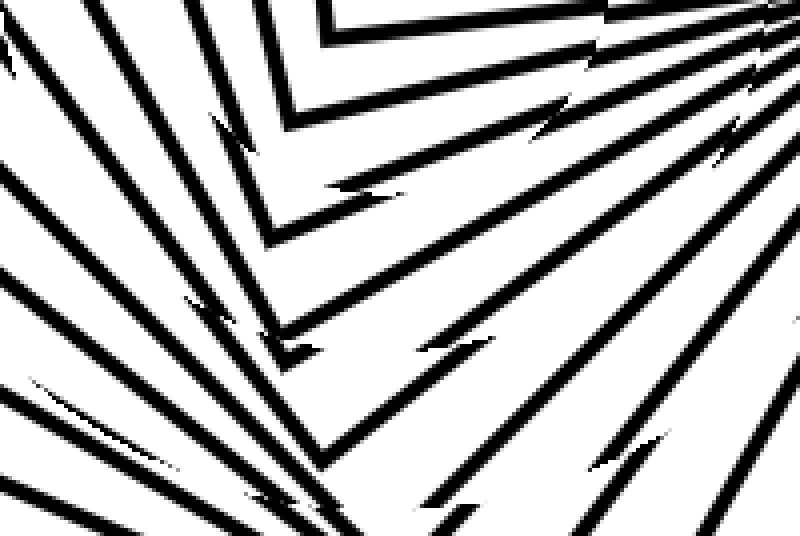
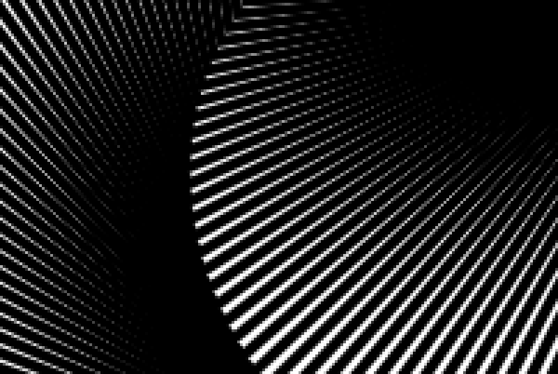
| Sweep | Loose | Window | |
|---|---|---|---|
| settings with holes | $160$ | $46$ | $146$ |
| worst ink lost | $32.9\%$ | $48.3\%$ | $13.8\%$ |
| in interval: settings | $41$ | $13$ | $\mathbf{0}$ |
| in interval: worst | $29.6\%$ | $48.3\%$ | $\mathbf{0.0\%}$ |
| legible: settings | $3$ | $0$ | $\mathbf{0}$ |
| legible: worst | $4.2\%$ | $0.0\%$ | $\mathbf{0.0\%}$ |
The row that matters is the third block. Wherever the proven interval fits the budget, the regime in which Theorem 4 claims exactness, Window disagrees with brute force in zero of the $2{,}401$ settings, while Sweep disagrees in $41$ settings and loses up to $29.6\%$ of the ink, and Loose up to $48.3\%$. The theorem is the difference between an image and a damaged one.
The $146$ settings where Window does lose ink are all outside the certified interval, and all of them are saturated: every one has an exact ink fraction above $70\%$, the sweep's legibility threshold. Across the $1{,}534$ legible settings, Window loses nothing anywhere. The claim this supports is: exact wherever the interval fits the budget, and exact on every legible setting of this sweep; the strided band of §9.6, which this sweep's cap excludes, is measured there separately and does lose ink.
Figure 13 shows what the Sweep column looks like on one scene, and Figure 14 isolates the drift constant. The
GPU twin agrees with the CPU twin to f32 precision at every point where
the interval fits the budget.
9.4 Ablation
Table 6 removes one mechanism at a time. The Lipschitz skip is the largest single lever ($2.0$–$3.1\times$), and the polygon closed form is decisive exactly where predicted: on the marginal drift it is worth $101.2\times$, because without it the scan must walk a $2^{16}$-wide interval to find an answer that Proposition 6 reads off in one comparison.
| rotated | translated | |||
|---|---|---|---|---|
| Mechanism removed | tri. | hex. out | near $s$ | marginal |
| Lipschitz skip (§7.4) | $2.03$ | $2.29$ | $3.12$ | $1.00$ |
| Support fast paths (§6) | $1.31$ | $1.16$ | $1.00$ | $1.49$ |
| Exact drift (§7.2) | $1.00$ | $1.00$ | $1.25$ | $1.00$ |
| Polygon closed form (§7.5) | $0.97$ | $0.99$ | $0.98$ | $\mathbf{101.2}$ |
| Carried rotation (§7.4) | $0.95$ | $0.91$ | $0.93$ | $1.01$ |
| Accept early exit (§7.1) | $0.91$ | $0.91$ | $0.90$ | $1.04$ |
Two rows run below $1$ wherever the solver actually scans: removing the carried rotation or the accept-early-exit is $5$–$10\%$ faster in the three scanning scenes, a wavefront-divergence effect. On the marginal drift neither is worth anything either way, because the closed form answers before a scan begins. We keep both because they are what make sparse and mid-density scenes cheap; the divergence reading, and why narrowing the interval rather than exiting sooner is the productive lever on a GPU, are in the supplemental material (§ S3).
9.5 Against explicit geometry
Every comparison so far has been against another way of evaluating our own fields. The comparison a reader is entitled to ask for is against not using fields at all: emit the members as paths and stroke them. We measure that on the same five pairs as Table 2 and Figure 20, so the three can be read together, and entirely inside the tool's own controls (zoom clamped to $[0.1, 10]$, spacing to the slider's range), because both effects below grow without bound and it would be easy, and worthless, to demonstrate them somewhere the tool cannot go.
The count does not stay still. Members are the level sets $\idx = ns + \varphi$, so how many meet the frame is the number of integers whose level lies in $\idx$'s range over it: exact, with nothing enumerated. Their total arc length follows from the coarea formula as $s^{-1}\!\int\lVert\nabla\idx\rVert$, which is independent of any flattening tolerance and so belongs to no particular back end. Both grow linearly as the view widens: at the zoom floor these scenes put up to $1{,}188$ distinct curves and $385{,}333$ device pixels of stroke into a single frame, and nothing bounds either, because the pattern is defined on all of $\R^2$. The field composite prices the same frames at two index evaluations and two gradients per pixel, at every zoom, which is the resolution independence of §3 stated as a cost.
The compositing is wrong where the moiré is. The deeper problem is not speed. A path renderer antialiases each path against the frame buffer and combines with over, so $N$ members give $1-\prod_i(1-\alpha_i)$. Within one family the strokes are disjoint (a point lies within half a stroke width of at most one member, since the width is below the spacing), so the true coverage of their union is $\sum_i \alpha_i$, and over is not that. Between two families the discrepancy is sharper and it is structural: over takes the overlap of two coverages to be $\alpha_1\alpha_2$, the value it would have if the two were uncorrelated sub-pixel areas [67]. A moiré is exactly the failure of that independence. Whether the two families' strokes coincide or interleave is what varies across the frame, and it is the whole of the signal, so a rule that assumes a constant overlap returns a constant where the fringes were.
To isolate that rule from any renderer's antialiasing quality we give the vector side exact per-path coverage, every $\alpha_i$ measured at $144$ samples per pixel, and compare against the true union measured on the same samples. What is left is the compositing alone. Across $27$ settings where a pattern is still legible, the mean ink barely moves: over loses at most $13.9\%$ of it. The fringe contrast is another matter. Below one member to a pixel it survives, costing at most $7.5\%$; this is the regime where a vector back end is the right tool and we do not claim otherwise. Past two members to a pixel it does not: over the $13$ such settings the median loss is $89.5\%$ of the fringe contrast, rising to $97.7\%$ ($92.0\%$ without the carrier-suppressing blur). Figure 15 is one of them, at the scene's own spacing and the tool's own zoom floor, with nothing unusual asked of it: $4.6\%$ of the ink lost, and $96.3\%$ of the pattern.
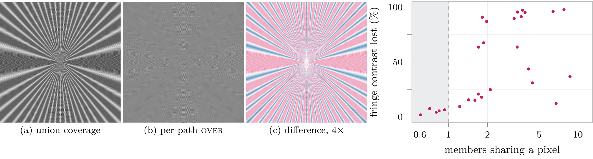
What has no analogue at all. Cost and coverage are differences of degree. The envelope of §4.4, the criterion of §4.2 and the contour authoring of §10 are differences of kind: each is a statement about $D = \idx_1 - \idx_2$, and explicit geometry has no $\idx$ to difference. Recovering the fringe field from paths means rasterizing them and low-passing the image: the raster round trip this representation exists to avoid, and the one whose absence the rest of this section has been measuring.
9.6 Where the guarantee ends
Theorem 4 gives an interval; it does not promise a small one. Two questions follow: how often is it too wide to walk, and what happens then.
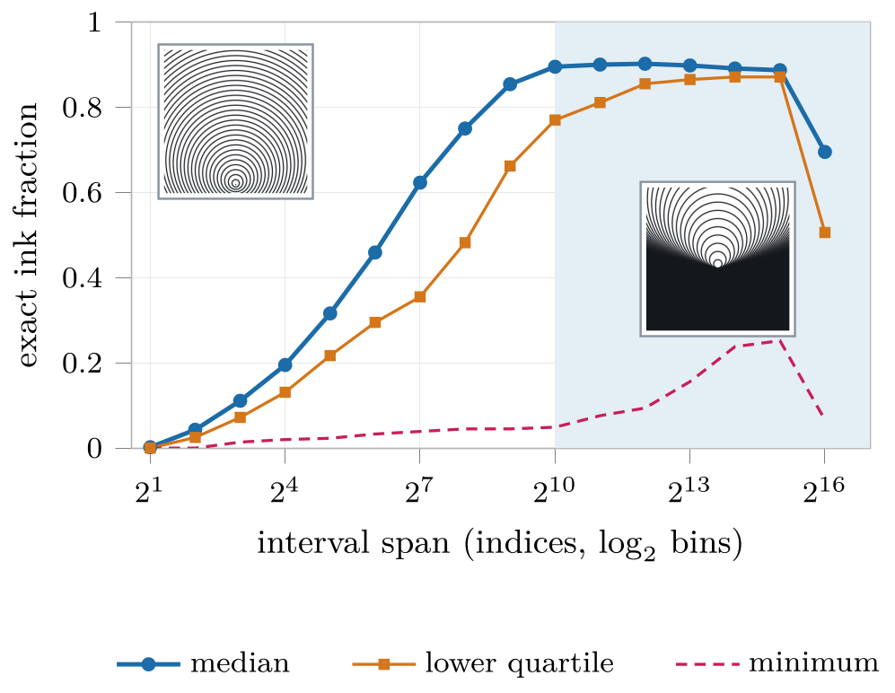
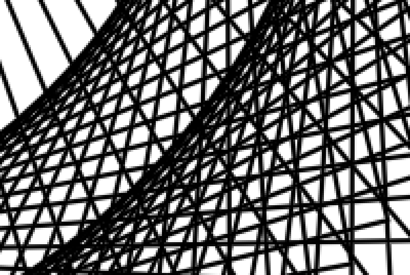
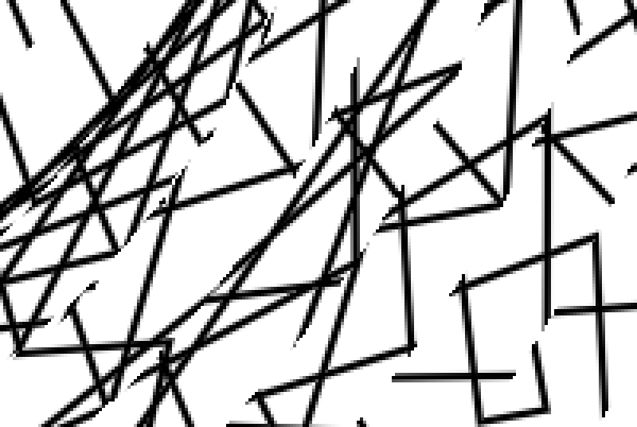
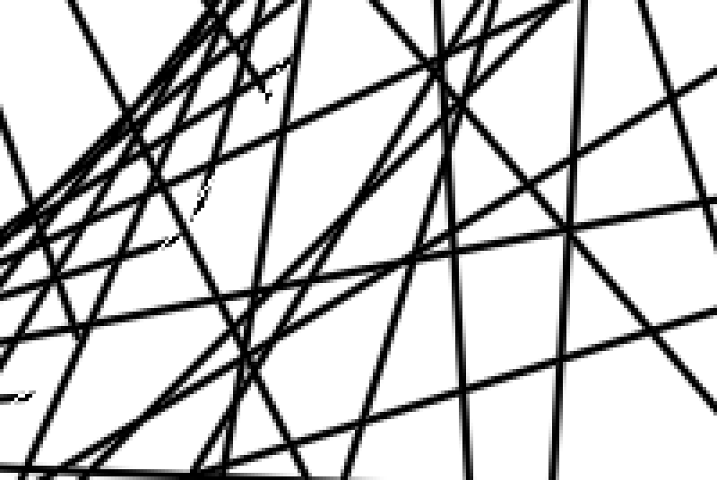
How often. Over $55{,}692$ settings spanning the whole parameter space our interface exposes, the interval fits the $B=1{,}024$ budget in $45{,}774$ of them ($82\%$). In the remaining $9{,}918$ the interval exceeds the budget. Every one of those has $m$ within a factor of $4.2$ of $s$; the wide-interval regime is precisely the near-marginal band, as the theory predicts.
What the field looks like there. Figure 16 answers this without needing an exhaustive reference, using the observation that any partial scan takes a minimum over a subset and therefore over-estimates $d$ and under-estimates ink: a measured ink fraction is a valid lower bound on the true one. Ink rises monotonically with interval span, and past the budget the median setting is $0.89$ ink. These are fields whose curves are far denser than the pixel grid, the regime where point sampling any distance field is meaningless and the correct answer is a prefiltered mean [12, 53]. Only $1{,}472$ settings ($2.6\%$ of the sweep) are both beyond the budget and legible. Legible here means under $50\%$ ink, where the fidelity sweep's threshold was $70\%$; the strided band is darker, so the stricter cut is the informative one.
What we lose there. For those we cannot use the exhaustive reference, so we compare against the same solver with $B$ raised to $131072$, which walks every index inside the span cap at stride $1$, on a stratified sample: every low-ink strided setting, plus a slice of the saturated ones. Over the $534$ settings so sampled, $217$ lose some ink; the mean loss is $4.6\%$ and the worst is $48.8\%$, in a setting whose exact field is $100\%$ ink. Restricted to the $298$ legible ones the worst loss is $28.7\%$. We do not claim correctness here and we do not claim a prefiltered mean; this is a genuine limitation, confined to a $2.6\%$ band of parameter space, and it is the obvious target for future work (Section 11).
What we do about it. What we can control is the structure of the error, and Figure 17 is the one finding here we would ask an implementor to keep. Both panels subsample by the same stride, spend the same $33$ evaluations per pixel, and retain statistically the same ink. Anchoring the stride to $n_{\mathrm{lo}}$, which depends on the pixel, makes adjacent pixels sample disjoint subsets of rings, and the pattern disintegrates into dashes. Anchoring it to multiples of the stride makes every pixel in a neighborhood agree on which rings exist, and the same amount of missing ink becomes a thinner family of whole curves. The error is identical in magnitude and completely different in kind. Since a viewer reads structure and not coverage, this is the difference between an approximation and a bug, and it costs nothing.
10 Fringes as an instrument
Everything so far has treated the index difference $D=\idx_1-\idx_2$ as an output: two families are given, $D$ is whatever they imply, and the fringe law (Theorem 2) tells us what we will see. This section runs the arrow backwards. If the fringes are the unit level sets of $D$, and $D$ is something we write in a shader, then we may choose the fringes.
10.1 Encoding a field in the difference
Let $f:\R^2\to\R$ be any scalar field, and let $a>0$ be a gain. Take a carrier: any family of phase $\ph_1$ and pitch $s$. Pair it with a second family defined by
Both families have the same pitch, so $\idx_i=\ph_i/s$ and
By Theorem 2 the light fringes are $\{D\in\Z\}$, which is $\{f=n/a\}$: the contours of $f$ at interval $c=1/a$. Not an approximation of them, and not a discretization of them, but the same curves a contour tracer would be trying to find. (For a circle-valued $f$ the same construction mints the quantized defects of §5.)
Notice everything that does not appear. There is no marching squares, no cell table, no ambiguous saddle, no polyline, no stitching of segments into curves, no decision about topology, and no resolution at which any of that would have happened. The contour is never computed. It is a place where two strokes coincide, and it is drawn by the same distance query and the same antialiasing the strokes already had.
Because $a$ and $s$ appear only in the product $as$, (36) is a shift of the phase residual and nothing else, which is why it costs so little to ship. §3.5 writes every family as $\{\ph=ns+\varphi\}$ and inks it through $\mathrm{periodicDist}(\ph-\varphi,s)/|\nabla\ph|$; encoding $f$ subtracts $a s f$ inside that residual and subtracts the vector $a s \nabla f$ from the carrier gradient it divides by. Two extra terms, one shared by all thirteen families (for the concentric and walking families the carrier direction in that divide is the radial direction from the layer origin, a first-order convenience).
The gradient term is not optional. Omit it and the modulated family's strokes thin wherever the field is steep, by the factor $|\nabla\ph_2|$, which is the same eikonal bug §3.5 found in the curve families, reintroduced through the back door. So a field is not usable unless $\nabla f$ comes with it, which is the whole of the next subsection.
10.2 Writing the field
$f$ is arbitrary in the mathematics and has to be arbitrary in the tool, or the contribution reduces to a fixed menu of fields. Our first version was such a menu: six fields as branches in the shader, each with its gradient differentiated by hand and transcribed into WGSL and into TypeScript. That is two derivations and four transcriptions per field, all required to agree and none checked by a compiler. Adding a seventh field meant editing the renderer, so neither an author nor we could extend it.
So the tool takes an expression. x\^2 - y\^2 is the saddle,
cos(tau * r) is the bullseye, and $six$ presets
(supplemental material, § S2) are starting points rather than
the offering. The language is deliberately small: the two coordinates, the polar
sugar r and theta, $\pi$, $\tau$ and $e$, the arithmetic
operators with \^ right-associative, and sixteen functions. There are
no variables, no conditionals and no loops, so a program is a bounded expression
tree and evaluating it is a bounded amount of work, which is what lets it run
per pixel with no schedule and no fallback.
Exact gradients from forward-mode duals. Nothing differentiates the expression symbolically. Both evaluators carry a
forward-mode dual number $(v,\partial_x v,\partial_y v)$ through each operation,
so $\nabla f$ falls out of the same traversal that produces $f$, exact to
floating point and never a finite difference. Eq. 36 then has the
gradient it needs for the eikonal divide without the author supplying one, and
the hand-derived gradients (the thing most likely to be silently wrong) are
gone. Singular points are handled by clamps shared between the two
evaluators, so a pole is the same finite number on both sides rather than a
NaN on one.
One rule in that traversal deserves stating. In the chain rule $\partial(g\circ h)=g'(h)\,\partial h$, a factor that is
exactly zero contributes nothing, even when the other factor
overflowed. A plain multiply gives $0\cdot\infty=\mathrm{NaN}$, and one
NaN anywhere in a gradient poisons the divide in Eq. 3
and blanks the layer. The zeros are not rare: a constant's partials are zero, a
coordinate's cross-partial is zero, and $\mathrm{floor}$ and $\mathrm{sign}$
have zero slope everywhere. The CPU evaluator multiplies through a helper that
tests for an exact zero at runtime; the emitter folds the same zeros at compile
time, which covers every structural zero but not a slope that becomes zero only
at runtime behind a domain guard, a divergence we accept and document in the
source. This is the ordinary hazard of automatic differentiation in floating
point, and it is easy to reach here because an author can write
log(-1) into a text box.
Compiling instead of interpreting. The bytecode is a stack machine, which invites the obvious implementation: hand the program to the fragment shader in a uniform buffer and walk it. We did, and it worked, and it cost $0.102$ ms per megapixel per instruction: $6.9$ for the longest preset, which at a retina canvas is most of a frame for one field on one layer of twelve. Worse, an empty program cost $0.045$, or $5\times$ a kernel with no field machinery at all, because the shader has to be handed the program before it can discover there is nothing in it. Every author paid for the feature whether or not they used it.
The fix is to stop interpreting. fields/emit.ts unrolls the bytecode
into straight-line code: the compile-time stack holds the names of values
rather than values, so there is no runtime stack, no dispatch, no loop and no
program to pass. dup becomes free: it pushes a name twice. Constants
are spelled into the source where the shader compiler folds them. And the zero
rule above, applied at emission, deletes most of the gradient arithmetic before
it is ever written: a term whose factor is the literal $0$ is not emitted at all,
which is why the $67$-instruction programs come out as only
$73$ statements. A layer with no field emits nothing.
metal-3. Interpreted walks the
bytecode from a uniform buffer; unrolled is that same program compiled to
straight-line code by fields/ emit.ts. Both run in one kernel over
one set of bindings and are checked against the CPU evaluator at the same points
before either is timed; they agree with each other to
$4{\times}10^{-5}$ relative. Each thread evaluates
the field $32$ times and stores once, so what is timed is the
arithmetic rather than the store. Interpreted cost is linear in program length;
compiled cost is not, and saddle compiled is cheaper than the
$0.0087$ a kernel with no field call at all costs, which is to say it has
disappeared into the noise.| Preset | Instr. | Stmts | Interpreted | Unrolled | Ratio |
|---|---|---|---|---|---|
| saddle | $7$ | $6$ | $0.781$ | $\mathbf{0.0050}$ | $156\times$ |
| dipole | $31$ | $40$ | $3.217$ | $\mathbf{0.0216}$ | $149\times$ |
| bumps | $51$ | $69$ | $5.292$ | $\mathbf{0.0188}$ | $281\times$ |
| swirl | $67$ | $73$ | $6.891$ | $\mathbf{0.0273}$ | $252\times$ |
| ripple | $6$ | $11$ | $0.634$ | $\mathbf{0.0173}$ | $37\times$ |
| terrain | $64$ | $69$ | $6.359$ | $\mathbf{0.0547}$ | $116\times$ |
| empty program | $0$ | $0$ | $0.045$ | $0$ | — |
| no field call | — | — | $0.0087$ | — | |
Table 7 prices both generations against each other. Interpreted,
cost tracks program length at $0.102$ per instruction: the signature of a
dispatch loop, and the reason the feature could not have been open-ended.
Compiled, it stops tracking length and starts tracking content: ripple
is the shortest program in the table and compiles to nearly four times the cost of
saddle, because cos(tau * r) is a hypot and a cosine and almost
nothing else, while swirl's $67$ instructions are mostly
arithmetic the shader compiler can schedule. Over the presets the compiled program is
$37$–$281\times$ cheaper, at
$0.0050$–$0.055$ ms per megapixel; the saddle comes in under
$0.0087$, which is what the same kernel costs with no field call in it at
all. That last entry is not a paradox, it is the resolution of the instrument, and
it is the useful statement: at $6$–$67$ instructions a field is
no longer a thing the frame budget has to account for.
Two backends, so the emitted code is checkable. Unrolling raises an obvious risk: the shader now runs code no human wrote, and
its only reference is an interpreter written in a different language. So the
emitter is backend-agnostic and there are two backends. WGSL ships. A JavaScript
backend exists so the test suite can generate a program, run it, and hold it
against the interpreter on the same inputs without a browser, which is how the
zero rule above was found. On the GPU we check further: the interpreter and the
unrolled code are compiled into the same kernel over the same bindings and
sampled at the same points, and they agree with each other to
$4{\times}10^{-5}$ relative and with the f64 CPU evaluator to the same
order. Both are verified before either is timed, so a wrong answer cannot be
mistaken for a fast one.
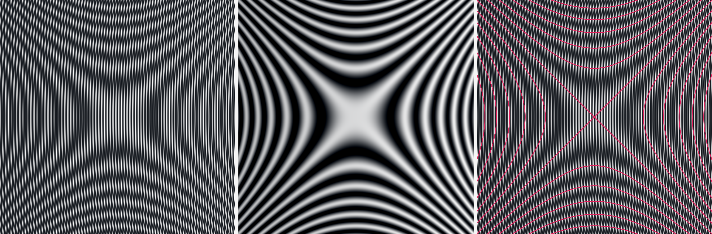
10.3 Does the ink land on the curve?
Theorem 2 is a statement about a locally averaged quantity, so it does not by itself promise that the visible bright band of a particular render is centered on the mathematical curve. That is a question about a rasterized image and it deserves a measurement rather than an argument.
We measure it as follows. Pick a point, walk it onto the nearest true level set $\{f=nc\}$ by Newton steps along $\nabla f$ (exact, since §10.2 differentiates every field as it evaluates it) and call the landing point $q$. Low-pass the render along the carrier direction, enough to erase both families' strokes and no more, so that nothing is smeared across the fringe we are about to locate. Then sample that low-passed image along the contour normal through $q$, fit a parabola to the three samples about the discrete maximum, and read off the sub-pixel position of the peak. Its displacement from $q$ is the error, in pixels.
The estimator has a bias of its own, so we calibrate it on a control whose answer is known in advance, and we pick one that is itself a state of the tool: two parallel families at pitches $5.8$ and $6.4444$, the oldest moiré there is. Its difference is $x\,(1/s_1-1/s_2)$ exactly, so its fringes are straight lines $58$ px apart. There the measured displacement is $0.26$ px on average and $0.29$ px at the $95$th percentile, which is the floor of the method of measurement rather than of the method being measured.
Against that floor, over $63{,}251$ probes on the $six$ presets of Figure 19 (the expressions Moiré offers as starting points, not a set chosen for the experiment), the mean displacement of the fringe peak from the true contour is $0.22$–$0.80$ px, with a worst $95$th percentile of $4.21$ px. That is the strongest statement this experiment can support: the fringe is on the curve to within our ability to say where the fringe is.
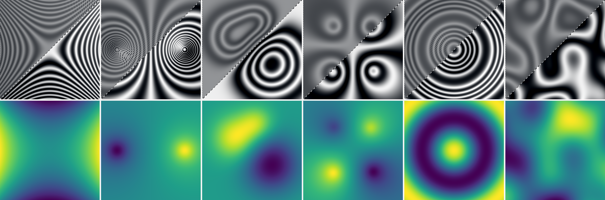
10.4 The sampling limit
The interesting failure is visible in the dipole panel of Figure 19. Fringe spacing is $c/|\nabla f|$, so a field with a steep region has contours that pack together, and a carrier of pitch $s$ cannot carry a fringe much finer than itself. Empirically the fringe is legible while
and this is the whole of the method's sampling limit: one inequality, in local quantities, both of which the renderer already has. It is a Nyquist statement about the carrier, not about the display, which is why raising the zoom does not help but lowering $s$ does.
Two properties of (38) are worth noting. First, it is a field, so it can be drawn, as the heterodyne ratio of §4.2 can: before committing to $c$, an author can be shown which parts of the frame will resolve. Second, when it is violated the picture degrades loudly. The unresolvable region fills with visible high-frequency structure (the dipole's poles turn into a black scribble), which is an honest report that the field is steeper there than the chosen interval can show. A contour tracer, by contrast, returns a dense set of polylines with no indication that the interval was too fine for the field.
10.5 Other uses of the difference
Equation (36) is one line, and $f$ in it is arbitrary. Several things follow that we have implemented but not studied, and we record them here because the field formulation makes them cheap enough to be worth recording.
Streamlines. A divergence-free planar flow has a stream function $\Psi$ whose level sets are its streamlines. Encoding $\Psi$ by (36) therefore draws the streamlines of the flow, with no integration of trajectories, no seeding strategy, and no decision about how long to trace before stopping. Moiré's swirl field is the stream function of four point vortices; encoding it draws closed streamlines around each vortex and the separatrices between them, out of two parallel layers.
Two fields at once. Two carriers, each with its own encoded partner, give two independent differences, hence two fringe systems whose crossings are the joint level sets $\{f=nc_f\}\cap\{g=mc_g\}$. We mention this with a caveat, because it is where we found the ink budget binds: four dense families in one frame drive the coverage towards saturation, and the two fringe systems, though present and correct, are hard to see. Separating them by hue helps and separating them by pitch helps more, but a clean two-field display wants a compositing rule other than “more strokes,” and we do not have one.
Deformation, which is the classical case. Let the second family be the first pulled back through a map $T$, so $\ph_2=\ph_1\circ T$. Then $D=(\ph_1-\ph_1\circ T)/s$, which to first order is $\langle \nabla\ph_1, p-T(p)\rangle/s$: the component of the displacement along the family's gradient, in units of the pitch. The fringes are its contours. This is precisely what shadow moiré, moiré topography and moiré deflectometry measure with physical gratings [68, 69, 89], and it falls out of (37) as the special case $f=\ph_1-\ph_1\circ T$. We note it not as a new result but as a sanity check on the formulation: the oldest quantitative use of moiré is a corollary of the fringe law, and the amplification factor those instruments are prized for is the $1/s$ in front. Nothing special is needed to get it: a vertical carrier and the bumps field is a grating photographed against its own shadow on a bumpy surface.
Error and disagreement. Nothing requires $f$ to be a physical field. Encoding the difference between an approximation and a reference makes the fringes the contours of the error, at an interval the author sets, in a display whose ink is legible at any zoom. We found this useful while debugging the renderer in this paper.
None of this is a new measurement principle; interferometry has used fringe counting for a century. What is new is where it now sits. These are two extra terms in a shader in a drawing tool, they run at frame rate, they compose with the thirteen families of §3.5 and with each other, and the picture they make is a picture — something an author can restyle, zoom, and put on a page — rather than the output of a measurement pipeline.
11 Discussion
What generalizes. Nothing in Sections 7.2–7.4 used two dimensions, and nothing used regular polygons beyond the value of $\kappa$. The argument needs exactly four things: a metric that is a support function of some convex body inside the unit ball, a lower bound $\kappa\lVert q\rVert$ on it, an index-affine motion of the frames, and a renderer that clamps the field at a known guard. Any family of nested convex level sets under a one-parameter rigid motion admits the same interval, with $\kappa$ the inradius of the normal hull and $m=\rad(-\delta)$ the support value along the walk. In $3$D the same construction covers nested convex shells under a screw motion; $\kappa$ becomes the inradius of the normal hull of the polyhedron, and Proposition 6 becomes a max over faces rather than edges. We have not implemented this, but the proofs do not change.
Conversely, the method fails cleanly where the hypotheses fail. A non-convex generator has no support-function representation, so (P2) and (P4) go and with them the interval and the closed form; the Lipschitz skip survives, since it needs only (P1). A motion that is not affine in the index (rings whose rotation accelerates, say) loses the affine envelopes but keeps a Lipschitz bound if the motion is Lipschitz in $n$, so Algorithm 1 would still run, only without a certificate.
Why the discrete setting is favorable. Why does this problem admit a stronger guarantee than the continuous analogues in Section 2? Range analysis on a spatial domain must subdivide, because the domain is uncountable and the bound is conservative; it terminates on a tolerance. Here the domain is $\N_0$, the interval is exact rather than conservative, and “enumerate the interval” is a terminating algorithm that returns the true minimum, not an approximation of it. Discreteness converts a tolerance into a proof. We suspect other rendering problems phrased as “which member of this indexed family is nearest” (glints [101, 102], tiled or stamped patterns [44], layered fibers) have the same structure available and are being solved with budgets instead.
What the representation provided, besides speed. We began with the field formulation as a way to get resolution independence, and that is what it delivered. What we did not expect is that it would function as a debugging method. Four shipped bugs were found the same way, by writing the layer's definition down and watching a unit fail to agree: the missing eikonal divide (§3.3; supplemental § S2), a stroke floor applied in phase units, a subsampling anchor nobody had noticed was a choice (§9), and an envelope pivot that counted a hex lattice as one family when it draws three (§4.4). A representation that names the quantities forces the units to agree, and most of our bugs were units. It also says which quantities must never be written twice. Each of our first six fields carried a gradient derived by hand and transcribed into two languages; the definition of a layer says that gradient is a consequence of the field, not an attribute of it, and forward-mode differentiation (§10.2) removes the transcriptions along with the class of bug they were the only source of.
Where the ink runs out. The formulation's real budget is not arithmetic, it is coverage. A layer costs one distance query, so twelve layers cost twelve; but twelve dense families of ink in one frame is a black rectangle, and the pattern is gone long before the frame rate is. This bound binds in exactly one place we wanted to go: displaying two encoded fields at once (§10) needs four families, and four families of strokes at a pitch fine enough to carry fringes saturates. Hue and pitch separation help and are not enough. We think the missing piece is a compositing rule for fields that is not union-of-ink, something that spends contrast rather than coverage, and we do not have one. Of the open problems in this paper it is the one that matters most, because it is what stands between a moiré and a display with more than one channel.
Limitations. Five, in decreasing order of severity. The scan's reach follows its gradients. The selection of §4.3 is order-free only where both index gradients are closed-form; a walking family's gradient is a screen-space difference, whose per-quad noise the reduction reads as slow high-order characters, so a pair involving one keeps the old order-two floor, and a lattice's candidate combinations are still an enumeration (the first three dual rings, supplemental § S3), so a sufficiently extreme lattice pair can beat outside them. Both caps are now exceptions that name their cause rather than a ceiling on the theory. The marginal band. On $\rad(-\delta)=s$ with $\theta\neq0$ the interval is genuinely infinite and we neither enumerate it nor prefilter it; we subsample, coherently, and accept up to $28.7\%$ ink loss in the legible corner of that band (Section 9.6). Proposition 6 solves the $\theta=0$ slice exactly, which suggests the rotated case is not hopeless: the residual there is a sinusoid plus a line, and the indices where it can vanish are governed by the continued-fraction expansion of $\theta/2\pi$: the same arithmetic §4.3 made the criterion's, so the tools are already in the renderer. We consider it the most promising follow-on. The metric. We minimize the residual of the inradius metric, not Euclidean distance to the curve, which thickens strokes near polygon corners by up to $1/\kappa$; dividing by $\lVert\nabla\rad\rVert$ would fix it, at the cost of the exact envelopes. Prefiltering. We show the wide-interval regime is saturated but do not integrate the field there; a correct analytic mean over a walking family is open, and would replace the subsampling fallback with something principled rather than merely coherent. Families without a scalar index. Four of our thirteen (the radial pencil and the three lattices) have no phase function in the sense of §3.5: the pencil's index is an angle, so its fringes are not level sets of a difference of scalars, and a lattice's index is a pair of integers, so a lattice pair produces a two-dimensional beat that the fringe law describes only along a chosen direction. They render correctly, and both are classical enough that the beat is well understood elsewhere [8, 57]; they simply sit outside the theorem, and a vector-valued index law that covered them would be a genuine extension.
Future work. Beyond the marginal band and prefiltering: the interval is computed per pixel from $r$, $\Lambda$, and $\kappa$, all of which vary smoothly, so a conservative interval could be computed once per tile and shared, which on a GPU trades divergence for a slightly wider scan, probably a win at zoom-out given the divergence measurements in Table 6. And since the residual's zero set is a curve in $(p, n)$ space, a screen-space continuation that carried $n^\star$ from pixel to pixel would reduce the search to a local refinement almost everywhere, with the interval available as the certificate that reseeds it when the continuation breaks.
12 Conclusion
Moiré has been drawn the same way for a century and a half: put down two layers of marks and let the overlap do the rest. Drawn that way, the fringe is an accident of sampling: what the overlap happened to produce, rather than what was asked for. We have argued that a moiré layer is better described by two scalar fields, an index and a distance, and that with those in hand the fringes stop being an accident. They are the unit level sets of the difference of the index fields (Theorem 2), a statement that under its local hypotheses needs no periodicity, no lattice, and no Fourier transform, and that we measured holding on every family we tested, including one whose index field exists only as the answer to a search.
Three things follow. The pattern becomes a document rather than a raster: resolution-independent, so that one description is a thumbnail, a screen, and a plate. The fringe becomes predictable before it is drawn, because the local ratios $\het_k$ of Eq. 11 say where one will appear and how it will run, and which beat it will be is no longer scanned for but computed: the visible-beat hierarchy is the continued fraction of the local pitch ratio, found at any order by per-pixel lattice reduction (§4.3), so the classical order cap is deleted rather than raised. And the fringe becomes addressable: choosing the index fields so that their difference is a field of interest turns the moiré into a contour plot of that field, which we verified localizes to a mean of $0.80$ px against ground truth on the hardest of six fields, written as expressions and differentiated as they are evaluated so that a field the author invents arrives with the gradient the renderer requires; a circle-valued field ends fringes at defects whose signed endings count its winding exactly (§5).
Making this run at interactive rates cost the paper's other half. When each member of a family carries its own rigid motion there is no global index field, and the per-pixel question becomes an inversion over the integers. We showed that one classical object, the support function of the generating shape, supplies everything needed to replace the usual fixed-window guess with a certificate: a Lipschitz modulus, an exact anisotropy floor $\cos(\pi/N)$, an exact drift rate $\rad(-\delta)$, and, when the per-index rotation vanishes, convexity of the residual and hence an exact solution for polygons of any side count, including the marginal case where no finite enumeration can succeed. That is $10$–$35\times$ faster than the enumeration it replaces across rotated settings, and in exact agreement with brute force on every legible setting of the fidelity sweep (§9.6 measures the strided band the sweep's cap excludes).
The work is embodied in Moiré, a browser tool in which thirteen families, twelve simultaneous layers, authored fields, and every parameter in this paper are live under the cursor at $60$ Hz. Building it is what produced the mathematics: the eikonal divide, the pixel-relative stroke floor, and the drift interval were each found by dragging a slider until something looked wrong. A field formulation is a good way to make a pattern precise, but an instrument that moves is a good way to find out which parts of it are false.
Two lessons we would carry elsewhere. A bound that is merely loose, not wrong, can still produce a visibly broken image whenever the fallback for a loose bound is approximation, so the tightness of a constant is not always a performance question. And when approximation is unavoidable, its structure matters more than its magnitude: the same missing ink reads as a thinner pattern or a shattered one depending only on whether the samples are anchored to the family or to the pixel.
References
- John Amanatides and Andrew Woo. 1987. A fast voxel traversal algorithm for ray tracing. Proceedings of Eurographics '87, 3–10. doi:10.2312/egtp.19871000
- Isaac Amidror, Roger D. Hersch, and Victor Ostromoukhov. 1994. Spectral analysis and minimization of moire patterns in color separation. Journal of Electronic Imaging 3, 3, 295–317. doi:10.1117/12.179355
- Isaac Amidror. 1994. A Generalized Fourier-Based Method for the Analysis of 2D Moire Envelope-Forms in Screen Superpositions. Journal of Modern Optics 41, 9, 1837–1862. doi:10.1080/09500349414551771
- Isaac Amidror and Roger D. Hersch. 1996. Fourier-based analysis of phase shifts in the superposition of periodic layers and their moire effects. Journal of the Optical Society of America A 13, 5, 974–987. doi:10.1364/JOSAA.13.000974
- Isaac Amidror and Roger D. Hersch. 1998. Fourier-based analysis and synthesis of moires in the superposition of geometrically transformed periodic structures. Journal of the Optical Society of America A 15, 5, 1100–1113. doi:10.1364/JOSAA.15.001100
- Isaac Amidror. 2003. Moire patterns between aperiodic layers: quantitative analysis and synthesis. Journal of the Optical Society of America A 20, 10, 1900–1919. doi:10.1364/JOSAA.20.001900
- Isaac Amidror. 2007. The Theory of the Moire Phenomenon, Volume II: Aperiodic Layers. Springer. doi:10.1007/1-4020-5458-0
- Isaac Amidror. 2009. The Theory of the Moire Phenomenon, Volume I: Periodic Layers. Springer. doi:10.1007/978-1-84882-181-1
- Jonathan T. Barron, Ben Mildenhall, Matthew Tancik, Peter Hedman, Ricardo Martin-Brualla, and Pratul P. Srinivasan. 2021. Mip-NeRF: A Multiscale Representation for Anti-Aliasing Neural Radiance Fields. Proceedings of the IEEE/CVF International Conference on Computer Vision (ICCV), 5835–5844. doi:10.1109/ICCV48922.2021.00580
- V. Yu. Bazhenov, M. V. Vasnetsov, and M. S. Soskin. 1990. Laser Beams with Screw Dislocations in Their Wavefronts. JETP Letters 52, 8, 429–431.
- Rafi Bistritzer and Allan H. MacDonald. 2011. Moire bands in twisted double-layer graphene. Proceedings of the National Academy of Sciences 108, 30, 12233–12237. doi:10.1073/pnas.1108174108
- Eric Bruneton and Fabrice Neyret. 2012. A survey of nonlinear prefiltering methods for efficient and accurate surface shading. IEEE Transactions on Visualization and Computer Graphics 18, 2, 242–260. doi:10.1109/TVCG.2011.81
- John H. Bruning, Donald R. Herriott, Joseph E. Gallagher, Daniel P. Rosenfeld, Andrew D. White, and Donald J. Brangaccio. 1974. Digital Wavefront Measuring Interferometer for Testing Optical Surfaces and Lenses. Applied Optics 13, 11, 2693–2703. doi:10.1364/AO.13.002693
- Olof Bryngdahl. 1974. Moire: Formation and interpretation. Journal of the Optical Society of America 64, 10, 1287–1294. doi:10.1364/JOSA.64.001287
- Ricardo Cabello and Three.js contributors. 2026. three.js. https://threejs.org/.
- Daniel Campos Zamora, Mustafa Doga Dogan, Alexa F. Siu, Eunyee Koh, and Chang Xiao. 2024. MoireWidgets: High-Precision, Passive Tangible Interfaces via Moire Effect. Proceedings of the CHI Conference on Human Factors in Computing Systems (CHI '24), 14. doi:10.1145/3613904.3642734
- Yuan Cao, Valla Fatemi, Shiang Fang, Kenji Watanabe, Takashi Taniguchi, Efthimios Kaxiras, and Pablo Jarillo-Herrero. 2018. Unconventional superconductivity in magic-angle graphene superlattices. Nature 556, 43–50. doi:10.1038/nature26160
- Edwin Catmull. 1978. A hidden-surface algorithm with anti-aliasing. Proceedings of the 5th Annual Conference on Computer Graphics and Interactive Techniques (SIGGRAPH '78), 6–11. doi:10.1145/800248.807360
- Sylvain M. Chosson and Roger D. Hersch. 2014. Beating Shapes Relying on Moire Level Lines. ACM Transactions on Graphics 34, 1, 11. doi:10.1145/2644806
- John H. Conway and Neil J. A. Sloane. 1982. Fast Quantizing and Decoding Algorithms for Lattice Quantizers and Codes. IEEE Transactions on Information Theory 28, 2, 227–232. doi:10.1109/TIT.1982.1056484
- Franklin C. Crow. 1977. The aliasing problem in computer-generated shaded images. Communications of the ACM 20, 11, 799–805. doi:10.1145/359863.359869
- David S. Ebert, F. Kenton Musgrave, Darwyn Peachey, Ken Perlin, and Steven Worley. 2003. Texturing and Modeling: A Procedural Approach. Morgan Kaufmann.
- Christer Ericson. 2004. Real-Time Collision Detection. Morgan Kaufmann. doi:10.1201/b14581
- Fan Feng. 2025. Objective Moire Patterns. Journal of Applied Mechanics 92, 8, 081002. doi:10.1115/1.4068060
- Sarah F. Frisken, Ronald N. Perry, Alyn P. Rockwood, and Thouis R. Jones. 2000. Adaptively sampled distance fields: a general representation of shape for computer graphics. Proceedings of the 27th Annual Conference on Computer Graphics and Interactive Techniques (SIGGRAPH '00), 249–254. doi:10.1145/344779.344899
- Eric Galin, Eric Guerin, Axel Paris, and Adrien Peytavie. 2020. Segment Tracing Using Local Lipschitz Bounds. Computer Graphics Forum 39, 2, 545–554. doi:10.1111/cgf.13951
- Elmer G. Gilbert, Daniel W. Johnson, and S. Sathiya Keerthi. 1988. A fast procedure for computing the distance between complex objects in three-dimensional space. IEEE Journal on Robotics and Automation 4, 2, 193–203. doi:10.1109/56.2083
- Leon Glass. 1969. Moire effect from random dots. Nature 223, 578–580. doi:10.1038/223578a0
- Andrew S. Glassner. 1997. Inside Moire Patterns. IEEE Computer Graphics and Applications 17, 6, 97–101. doi:10.1109/38.626975
- Chris Green. 2007. Improved alpha-tested magnification for vector textures and special effects. ACM SIGGRAPH 2007 Courses, 9–18. doi:10.1145/1281500.1281665
- John C. Hart. 1996. Sphere tracing: a geometric method for the antialiased ray tracing of implicit surfaces. The Visual Computer 12, 10, 527–545. doi:10.1007/s003710050084
- Jacques Harthong. 1981. Le moire. Advances in Applied Mathematics 2, 1, 24–75. doi:10.1016/0196-8858(81)90038-5
- Paul S. Heckbert. 1986. Survey of Texture Mapping. IEEE Computer Graphics and Applications 6, 11, 56–67. doi:10.1109/MCG.1986.276672
- Roger D. Hersch and Sylvain Chosson. 2004. Band Moire Images. ACM Transactions on Graphics 23, 3, 239–247. doi:10.1145/1015706.1015709
- Adolf Hurwitz. 1891. Ueber die angenaherte Darstellung der Irrationalzahlen durch rationale Bruche. Mathematische Annalen 39, 2, 279–284. doi:10.1007/BF01206656
- M. C. Hutley, R. Hunt, R. F. Stevens, and P. Savander. 1994. The Moire Magnifier. Pure and Applied Optics: Journal of the European Optical Society Part A 3, 2, 133–142. doi:10.1088/0963-9659/3/2/006
- T. J. Jankun-Kelly and Kwan-Liu Ma. 2003. MoireGraphs: Radial Focus+Context Visualization and Interaction for Graphs with Visual Nodes. IEEE Symposium on Information Visualization 2003 (INFOVIS 2003), 59–66. doi:10.1109/INFVIS.2003.1249009
- Devendra Kalra and Alan H. Barr. 1989. Guaranteed ray intersections with implicit surfaces. Proceedings of SIGGRAPH '89, 297–306. doi:10.1145/74333.74364
- Matthew J. Keeter. 2020. Massively parallel rendering of complex closed-form implicit surfaces. ACM Transactions on Graphics 39, 4. doi:10.1145/3386569.3392429
- Aleksandr Ya. Khinchin. 1964. Continued Fractions. University of Chicago Press.
- Mark J. Kilgard and Jeff Bolz. 2012. GPU-accelerated path rendering. ACM Transactions on Graphics 31, 6, 1–10. doi:10.1145/2366145.2366191
- Aaron Knoll, Younis Hijazi, Andrew Kensler, Mathias Schott, Charles Hansen, and Hans Hagen. 2009. Fast ray tracing of arbitrary implicit surfaces with interval and affine arithmetic. Computer Graphics Forum 28, 1, 26–40. doi:10.1111/j.1467-8659.2008.01189.x
- Felix Knoppel, Keenan Crane, Ulrich Pinkall, and Peter Schroder. 2015. Stripe Patterns on Surfaces. ACM Transactions on Graphics 34, 4, 39:1–39:11. doi:10.1145/2767000
- Ares Lagae, Sylvain Lefebvre, Rob Cook, Tony DeRose, George Drettakis, David S. Ebert, J. P. Lewis, Ken Perlin, and Matthias Zwicker. 2010. A survey of procedural noise functions. Computer Graphics Forum 29, 8, 2579–2600. doi:10.1111/j.1467-8659.2010.01827.x
- Guy Lebanon and Alfred M. Bruckstein. 2001. Variational approach to moire pattern synthesis. Journal of the Optical Society of America A 18, 6, 1371–1382. doi:10.1364/JOSAA.18.001371
- Charles Loop and Jim Blinn. 2005. Resolution independent curve rendering using programmable graphics hardware. ACM Transactions on Graphics 24, 3, 1000–1009. doi:10.1145/1073204.1073303
- Josiah Manson and Scott Schaefer. 2013. Analytic Rasterization of Curves with Polynomial Filters. Computer Graphics Forum 32, 2pt4, 499–507. doi:10.1111/cgf.12070
- D. M. Meadows, W. O. Johnson, and J. B. Allen. 1970. Generation of Surface Contours by Moire Patterns. Applied Optics 9, 4, 942–947. doi:10.1364/AO.9.000942
- Don P. Mitchell. 1990. Robust ray intersection with interval arithmetic. Proceedings of Graphics Interface '90, 68–74. doi:10.20380/GI1990.08
- Diego Nehab and Hugues Hoppe. 2008. Random-access rendering of general vector graphics. ACM Transactions on Graphics 27, 5, 1–10. doi:10.1145/1409060.1409088
- Phong Q. Nguyen and Damien Stehle. 2009. Low-Dimensional Lattice Basis Reduction Revisited. ACM Transactions on Algorithms 5, 4, 46:1–46:48. doi:10.1145/1597036.1597050
- Carsten Nicolai. 2010. Moire Index. Gestalten.
- Alan Norton, Alyn P. Rockwood, and Philip T. Skolmoski. 1982. Clamping: A method of antialiasing textured surfaces by bandwidth limiting in object space. Proceedings of SIGGRAPH '82, 1–8. doi:10.1145/800064.801252
- John F. Nye and Michael V. Berry. 1974. Dislocations in Wave Trains. Proceedings of the Royal Society of London A 336, 1605, 165–190. doi:10.1098/rspa.1974.0012
- John F. Nye and Michael V. Berry. 1974. Dislocations in Wave Trains. Proceedings of the Royal Society of London A 336, 1605, 165–190. doi:10.1098/rspa.1974.0012
- Gerald Oster and Yasunori Nishijima. 1963. Moire Patterns. Scientific American 208, 5, 54–63. doi:10.1038/scientificamerican0563-54
- Gerald Oster, Mark Wasserman, and Craig Zwerling. 1964. Theoretical interpretation of moire patterns. Journal of the Optical Society of America 54, 2, 169–175. doi:10.1364/JOSA.54.000169
- Gerald Oster. 1965. Optical Art. Applied Optics 4, 11, 1359–1369. doi:10.1364/AO.4.001359
- Victor Ostromoukhov, Roger D. Hersch, and Isaac Amidror. 1994. Rotated Dispersed Dither: A New Technique for Digital Halftoning. Proceedings of the 21st Annual Conference on Computer Graphics and Interactive Techniques (SIGGRAPH '94), 123–130. doi:10.1145/192161.192188
- Victor Ostromoukhov and Roger D. Hersch. 1995. Artistic Screening. Proceedings of the 22nd Annual Conference on Computer Graphics and Interactive Techniques (SIGGRAPH '95), 219–228. doi:10.1145/218380.218445
- Victor Ostromoukhov and Roger D. Hersch. 1999. Multi-Color and Artistic Dithering. Proceedings of the 26th Annual Conference on Computer Graphics and Interactive Techniques (SIGGRAPH '99), 425–432. doi:10.1145/311535.311605
- Marios Papas, Thomas Houit, Derek Nowrouzezahrai, Markus Gross, and Wojciech Jarosz. 2012. The Magic Lens: Refractive Steganography. ACM Transactions on Graphics 31, 6, 10. doi:10.1145/2366145.2366205
- Krzysztof Patorski, Suezou Yokozeki, and Tsuyoshi Suzuki. 1976. Moire Profile Prediction by Using Fourier Series Formalism. Japanese Journal of Applied Physics 15, 3, 443–456. doi:10.1143/JJAP.15.443
- Krzysztof Patorski and Malgorzata Kujawinska. 1993. Handbook of the Moire Fringe Technique. Elsevier.
- S. A. Piyavskii. 1972. An algorithm for finding the absolute extremum of a function. USSR Computational Mathematics and Mathematical Physics 12, 4, 57–67. doi:10.1016/0041-5553(72)90115-2
- Petar Pjanic and Roger D. Hersch. 2015. Color Imaging and Pattern Hiding on a Metallic Substrate. ACM Transactions on Graphics 34, 4, 10. doi:10.1145/2766944
- Thomas Porter and Tom Duff. 1984. Compositing digital images. Proceedings of the 11th Annual Conference on Computer Graphics and Interactive Techniques (SIGGRAPH '84), 253–259. doi:10.1145/800031.808606
- Daniel Post, Bongtae Han, and Peter Ifju. 1994. High Sensitivity Moire: Experimental Analysis for Mechanics and Materials. Springer. doi:10.1007/978-1-4612-4334-2
- Daniel Post and Bongtae Han. 2008. Moire Interferometry. Springer Handbook of Experimental Solid Mechanics, 627–654. doi:10.1007/978-0-387-30877-7\_22
- Simeng Qiu, Hadi Amata, and Wolfgang Heidrich. 2023. MoireTag: Angular Measurement and Tracking with a Passive Marker. ACM SIGGRAPH 2023 Conference Proceedings, 10. doi:10.1145/3588432.3591538
- Inigo Quilez. 2008. Distance functions. https://iquilezles.org/articles/distfunctions/.
- Inigo Quilez. 2019. 2D distance functions. https://iquilezles.org/articles/distfunctions2d/.
- Inigo Quilez. 2023. SDF Domain Repetition. https://iquilezles.org/articles/sdfrepetition/.
- Lord Rayleigh. 1874. On the manufacture and theory of diffraction-gratings. The London, Edinburgh, and Dublin Philosophical Magazine and Journal of Science 47, 310, 81–93. doi:10.1080/14786447408640996
- Augusto Righi. 1887. Sui fenomeni che si producono colla sovrapposizione di due reticoli e sopra alcune loro applicazioni. Il Nuovo Cimento 21, 203–229. doi:10.1007/BF02737370
- R. Tyrrell Rockafellar. 1970. Convex Analysis. Princeton University Press. doi:10.1515/9781400873173
- Artin Saberpour, Roger D. Hersch, Jiajing Fang, Rhaleb Zayer, Hans-Peter Seidel, and Vahid Babaei. 2020. Fabrication of moire on curved surfaces. Optics Express 28, 13, 19413–19427. doi:10.1364/OE.393843
- Rolf Schneider. 2014. Convex Bodies: The Brunn–Minkowski Theory. Cambridge University Press. doi:10.1017/CBO9781139003858
- Cesar A. Sciammarella. 1965. Basic Optical Law in the Interpretation of Moire Patterns Applied to the Analysis of Strains –- Part 1. Experimental Mechanics 5, 5, 154–160. doi:10.1007/BF02324049
- William C. Seitz. 1965. The Responsive Eye. The Museum of Modern Art.
- Asok K. Sen. 1998. A Product–Delay Algorithm for Graphic Design. Computers & Graphics 22, 6, 759–764. doi:10.1016/S0097-8493(98)00096-X
- Asok K. Sen. 2000. Moire Patterns. Computers & Graphics 24, 3, 471–475. doi:10.1016/S0097-8493(00)00043-1
- Ticha Sethapakdi, Maxine Perroni-Scharf, Mingming Li, Jiaji Li, Justin Solomon, Arvind Satyanarayan, and Stefanie Mueller. 2025. FabObscura: Computational Design and Fabrication for Interactive Barrier-Grid Animations. Proceedings of the 38th Annual ACM Symposium on User Interface Software and Technology (UIST '25), 16. doi:10.1145/3746059.3747629
- Nicholas Sharp and Alec Jacobson. 2022. Spelunking the deep: guaranteed queries on general neural implicit surfaces via range analysis. ACM Transactions on Graphics 41, 4. doi:10.1145/3528223.3530155
- Bruno O. Shubert. 1972. A sequential method seeking the global maximum of a function. SIAM Journal on Numerical Analysis 9, 3, 379–388. doi:10.1137/0709036
- John M. Snyder. 1992. Interval Analysis for Computer Graphics. Proceedings of SIGGRAPH '92, 121–130. doi:10.1145/133994.134024
- Marat S. Soskin and Mikhail V. Vasnetsov. 2001. Singular Optics. Progress in Optics 42, 219–276. doi:10.1016/S0079-6638(01)80018-4
- Yves Surrel. 1996. Design of Algorithms for Phase Measurements by the Use of Phase Stepping. Applied Optics 35, 1, 51–60. doi:10.1364/AO.35.000051
- Hiroshi Takasaki. 1970. Moire Topography. Applied Optics 9, 6, 1467–1472. doi:10.1364/AO.9.001467
- Mitsuo Takeda, Hideki Ina, and Seiji Kobayashi. 1982. Fourier-transform method of fringe-pattern analysis for computer-based topography and interferometry. Journal of the Optical Society of America 72, 1, 156–160. doi:10.1364/JOSA.72.000156
- Gabriel Taubin. 1994. Distance Approximations for Rasterizing Implicit Curves. ACM Transactions on Graphics 13, 1, 3–42. doi:10.1145/174462.174531
- Thibault Tricard, Semyon Efremov, Cedric Zanni, Fabrice Neyret, Jonas Martinez, and Sylvain Lefebvre. 2019. Procedural Phasor Noise. ACM Transactions on Graphics 38, 4, 57:1–57:13. doi:10.1145/3306346.3322990
- Pei-Hen Tsai and Yung-Yu Chuang. 2013. Target-Driven Moire Pattern Synthesis by Phase Modulation. Proceedings of the IEEE International Conference on Computer Vision (ICCV), 1912–1919. doi:10.1109/ICCV.2013.240
- Robert Ulichney. 1987. Digital Halftoning. MIT Press. doi:10.7551/mitpress/2421.001.0001
- W3C GPU for the Web Working Group. 2025. WebGPU. W3C Candidate Recommendation, https://www.w3.org/TR/webgpu/.
- Thomas Walger and Roger D. Hersch. 2015. Hiding Information in Multiple Level-line Moires. Proceedings of the 2015 ACM Symposium on Document Engineering (DocEng '15), 21–24. doi:10.1145/2682571.2797078
- Thomas Walger, Theophane Besson, Valentin Flauraud, Roger D. Hersch, and Juergen Brugger. 2019. 1D moire shapes by superposed layers of micro-lenses. Optics Express 27, 26, 37419–37434. doi:10.1364/OE.27.037419
- Thomas Walger, Theophane Besson, Valentin Flauraud, Roger D. Hersch, and Juergen Brugger. 2020. Level-line moires by superposition of cylindrical microlens gratings. Journal of the Optical Society of America A 37, 2, 209–218. doi:10.1364/JOSAA.37.000209
- James F. Watkins. 1982. Kinetic Art: Producing Unusual Moire Effects by Means of Specially Prepared Drawings. Leonardo 15, 2, 133–136. doi:10.2307/1574552
- Chang Xiao and Changxi Zheng. 2021. MoireBoard: A Stable, Accurate and Low-cost Camera Tracking Method. The 34th Annual ACM Symposium on User Interface Software and Technology (UIST '21), 881–893. doi:10.1145/3472749.3474793
- Ling-Qi Yan, Milov s Hav san, Wenzel Jakob, Jason Lawrence, Steve Marschner, and Ravi Ramamoorthi. 2014. Rendering glints on high-resolution normal-mapped specular surfaces. ACM Transactions on Graphics 33, 4. doi:10.1145/2601097.2601155
- Ling-Qi Yan, Milov s Hav san, Steve Marschner, and Ravi Ramamoorthi. 2016. Position-normal distributions for efficient rendering of specular microstructure. ACM Transactions on Graphics 35, 4. doi:10.1145/2897824.2925915
- Matthias Zwicker, Hanspeter Pfister, Jeroen van Baar, and Markus Gross. 2002. EWA Splatting. IEEE Transactions on Visualization and Computer Graphics 8, 3, 223–238. doi:10.1109/TVCG.2002.1021576
Appendix
A Proofs
A.1 The fringe law
Proof of Theorem 2. Recall the setting. Layer $i$ has index field $\idx_i$, and its ink at a point $q$ comes from thresholding the Euclidean distance to the nearest member,
against the half-width $h_i$ with an antialiasing band $a$, giving $\alpha_i(q)=1-\mathrm{smoothstep}(h_i-a,\,h_i+a,\,d_i(q))$. Here $\mathrm{pd}(x,1)=\min_{n\in\Z}\lvert x-n\rvert$ is the distance to the nearest integer. The two layers share a color and composite as a union, $\alpha=\alpha_1+\alpha_2-\alpha_1\alpha_2$.
\paragraph{Step 1: move the threshold into index units.} Substituting (39), the condition $d_i\le h_i$ is $\mathrm{pd}(\idx_i,1)\le h_i\lVert\nabla\idx_i\rVert$. Writing $w_i=h_i\lVert\nabla\idx_i\rVert$ and $b_i=a\lVert\nabla\idx_i\rVert$ for the half-width and band measured in index units, and
we have exactly $\alpha_i(q)=A_i(\idx_i(q))$. This is the only place the eikonal factor of §3.3 is used, and it is used twice: once to make the threshold comparable to a length, and once to make $w_i$ and $b_i$ constants rather than functions of $q$, which is where the theorem's constant-gradient hypothesis enters, and why it cannot be dropped. The verification in §4.1 excludes samples whose gradient varies by more than $15\%$ across a period for exactly this reason.
\paragraph{Step 2: reparameterize the segment by index.} Let $g=\tfrac12(\nabla\idx_1+\nabla\idx_2)$, let $u=g/\lVert g\rVert$, let $T=1/\lVert g\rVert$, and parameterize $S$ by arclength $t\in[-T/2,T/2]$, so $q(t)=p+tu$. With $\nabla\idx_1$ constant on $S$, the map $t\mapsto v=\idx_1(q(t))$ is affine with slope $\langle\nabla\idx_1,u\rangle$, hence a measure-preserving reparameterization onto an interval of length
since $\nabla\idx_1=g+\tfrac12\nabla D$ and $\het=\lVert\nabla D\rVert/\lVert g\rVert$; when $D$ is constant on $S$ the middle term vanishes and the length is exactly $1$. So averaging over $S$ in $t$ is averaging over one unit period in $v$, exactly in the constant case and to first order in $\het$ otherwise; and because both $A_1$ and $A_2$ are $1$-periodic, the choice of representative period does not matter.
\paragraph{Step 3: the constant case.} By definition $\idx_2=\idx_1-D$, so in the new variable the second layer's argument is $v-D$. If $D$ is constant on $S$, equal to $D(p)$, then
which is (7). Every dependence on $p$ has been absorbed into the single number $D(p)$: the individual index fields have disappeared, and with them any notion of periodicity, orientation, or curvature of either family. This is the content of the theorem.
@@FLOAT27@@
\paragraph{Step 4: the hard-edged limit.} Let $b_i\to0$, so $A_i$ becomes the indicator of $\{\mathrm{pd}(v,1)\le w_i\}$, an interval of length $2w_i$ per period. Then $\int_0^1 A_i=2w_i$, and $\int_0^1A_1(v)A_2(v-\Delta)\,\mathrm{d}v$ is the overlap of two arcs of half-widths $w_1$ and $w_2$ whose centers are $t=\mathrm{pd}(\Delta,1)$ apart. That overlap is $w_1+w_2-t$ only while the arcs partially overlap; once one lies inside the other ($t\le|w_1-w_2|$) it saturates at $2\min(w_1,w_2)$, and once they separate it is zero, so $\mathrm{overlap}=\min\big(2\min(w_1,w_2),\,\max(0,\,w_1+w_2-t)\big)$. A second overlap across the far side of the period would need $w_1+w_2>1-t\ge\tfrac12$, which the theorem's hypothesis $w_1+w_2\le\tfrac12$ excludes; this is where that hypothesis is used, and without it (8) overcounts (the integral form (7) does not). Hence
which is (8). It is piecewise linear in $t$, with slope $0$ while one stroke lies inside the other, slope $1$ while they partially overlap, and slope $0$ after they separate: a tent with a flat floor and a flat top, minimized at $\Delta\in\Z$ at the value $2\max(w_1,w_2)$ and maximized at $2w_1+2w_2$ wherever $t\ge w_1+w_2$. Note that the plateau is reached strictly inside the period whenever $w_1+w_2<\tfrac12$, which is the regime the tool operates in and the reason thickening strokes eventually stops changing the fringe.
\paragraph{Step 5: the non-constant case, and why the error is first order.} Suppose now that $D$ varies on $S$; with the gradients constant it is affine there. In the index variable write $D=D(p)+\mu\,(v-v_p)$, where $\mu$ is the change in $D$ per unit index, so that $\lvert\mu\rvert\le\het+O(\het^2)$ by the definition of $\het$ (with equality when $\nabla D$ is parallel to $u$). Put $F(v,\Delta)=A_1(v)+A_2(v-\Delta)-A_1(v)A_2(v-\Delta)$, so that $\Phi(\Delta)=\int_0^1F(v,\Delta)\,\mathrm{d}v$. Averaging over the period and expanding in $\mu$,
The integral is bounded: $\partial_\Delta F(v,\Delta)=A_2'(v-\Delta)\,(A_1(v)-1)$, $\lvert v-v_p\rvert\le\tfrac12$ on the period, $\lvert A_1-1\rvert\le1$, and $\int_0^1\lvert A_2'\rvert\le2$ for the single-bump profile (40), so the correction is at most $\lvert\mu\rvert$ in absolute value. Hence $\bar\alpha(p)=\Phi(D(p))+O(\het)$, as claimed. ∎
Remark 7. The first-order term does not vanish identically. It is odd in $(v-v_p)$ against a factor that is not even, so no symmetry argument kills it, and one should expect a genuine $O(\het)$ perturbation of the profile: a slight asymmetry leaning in the direction the carrier is changing. Its effect on the positions of the extrema depends also on the profile's curvature there, and on a plateaued extremum the position is not $O(\het)$-stable at all; the measured statistic is consistent with this: the light fringes of Table 2 sit at mean index gap $0.036$ from an integer rather than at $0$, a fraction of the regime bound $\het=1/4$.
Figure 20 is the theorem and its hypothesis drawn together, on five of the pairs Table 2 measures.
The remaining proofs. Each bound of §7 is short and is proved where it is stated: the drift constant in §7.2, the two-sided envelope as Lemma 3, the sufficient interval as Theorem 4, the Lipschitz skip as Lemma 5, the translated-polygon closed form as Proposition 6.